<!doctype html>
<html lang="en">
<head>
  <meta charset="utf-8">
  <meta name="viewport" content="width=device-width, initial-scale=1">
  <title>arxiv digest — 2026-10-27</title>
  <style>
:root {
  --bg: #ffffff;
  --fg: #1f2328;
  --muted: #59636e;
  --border: #d0d7de;
  --card: #f6f8fa;
  --link: #0969da;
}
body {
  max-width: 980px;
  margin: 0 auto;
  padding: 2rem 1rem 5rem;
  font-family: -apple-system, BlinkMacSystemFont, "Segoe UI", Helvetica, Arial, sans-serif;
  line-height: 1.55;
  color: var(--fg);
  background: var(--bg);
}
a { color: var(--link); }
img { max-width: 100%; height: auto; }
pre, code { background: var(--card); border-radius: 6px; }
pre { padding: 1rem; overflow-x: auto; }
blockquote { border-left: 4px solid var(--border); padding-left: 1rem; color: var(--muted); }
details { margin: 0.6rem 0; }
summary { cursor: pointer; font-weight: 600; }
.paper-figures-scroll {
  display: flex;
  gap: 1rem;
  overflow-x: auto;
  overscroll-behavior-x: contain;
  padding: 0.75rem 0.25rem 1rem;
  margin: 1rem 0 1.25rem;
  border-top: 1px solid var(--border);
  border-bottom: 1px solid var(--border);
  scroll-snap-type: x proximity;
}
.paper-figure-card {
  flex: 0 0 min(260px, 72vw);
  scroll-snap-align: start;
  background: var(--card);
  border: 1px solid var(--border);
  border-radius: 12px;
  padding: 0.55rem;
}
.paper-figure-card img {
  display: block;
  width: 100%;
  max-height: 240px;
  object-fit: contain;
  background: white;
  border-radius: 8px;
}
.paper-figure-caption {
  display: block;
  margin-top: 0.5rem;
  color: var(--muted);
  font-size: 0.85rem;
}
.figure-strip-hint {
  color: var(--muted);
  font-size: 0.9rem;
  margin-bottom: -0.3rem;
}
</style>
  <script>
    window.MathJax = {
      tex: {
        inlineMath: [['$', '$'], ['\\(', '\\)']],
        displayMath: [['$$', '$$'], ['\\[', '\\]']],
        processEscapes: true,
        processEnvironments: true
      },
      options: {
        skipHtmlTags: ['script', 'noscript', 'style', 'textarea', 'pre', 'code'],
        ignoreHtmlClass: 'tex2jax_ignore',
        processHtmlClass: 'tex2jax_process'
      }
    };
  </script>
  <script id="MathJax-script" async
    src="https://cdn.jsdelivr.net/npm/mathjax@3/es5/tex-chtml.js"></script>
</head>
<body>
<header style="background-color: #333; color: white; padding: 15px; margin-bottom: 20px;">
  <h1 style="margin: 0; font-size: 24px;">
    <a href="https://ochelpan.github.io/arXiv_clean/" style="color: white; text-decoration: none;">Main</a>
  </h1>
</header>

<h1>Daily arXiv Report</h1>

<hr>
<p>
<a href="index.html">← Index</a>
 · <a href="papers_05.html">← Previous</a>
</p>
<hr>

<h2>Papers 101–116</h2>
<p><a id="paper-2610.32136"></a></p>
<h3 id="zeeman-shift-and-injection-currents-under-light-irradiation"><a href="http://arxiv.org/abs/2610.32136v1">Zeeman Shift and Injection Currents under Light Irradiation</a></h3>
<p><strong>Authors:</strong> Ruizhi Dong, Yihua Xiao, Pengfei Wang, Ruixiang Fei<br>
<strong>Type:</strong> theory · <strong>Category:</strong> other · <strong>PDF:</strong> <a href="https://arxiv.org/pdf/2610.32136v1">https://arxiv.org/pdf/2610.32136v1</a><br>
<strong>Analysis basis:</strong> full PDF text, analyzed in chunks
<strong>Topic relevance:</strong> <code>Keldysh / 2PI / non-Gaussian methods</code> <strong>2/5</strong></p>
<div class="figure-strip-hint">↔ Scroll figures horizontally</div>
<div class="paper-figures-scroll">
<figure class="paper-figure-card">
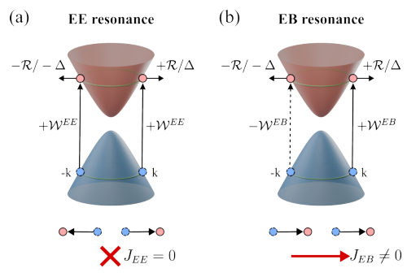
<figcaption class="paper-figure-caption"><b>Fig 1.</b> FIG. 1. Fermi’s golden rule picture of photocurrent gen- eration in a centrosymmetric system. (a) For electric-dipole (EE) transitions, the inversion-even rate WEE and inversion- odd shift vector R or velocity difference ∆yield opposite con- tributions at ±k, giving JEE = 0. (b) The electric-dipole– Zeeman (EB) interference term is inversion odd, WEB(k) = −WEB(−k). The corresponding photocurrent contributions at ±k therefore add, allowing a finite JEB.</figcaption>
</figure>
<figure class="paper-figure-card">
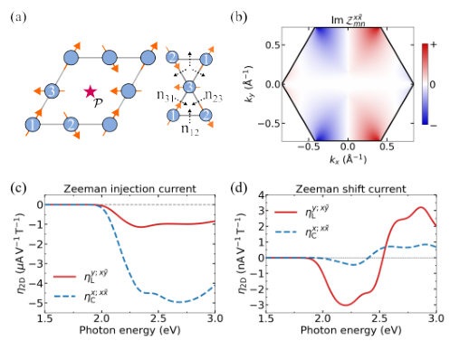
<figcaption class="paper-figure-caption"><b>Fig 2.</b> FIG. 2. (a) Schematic of the kagome model with copla- nar magnetic order. Orange and black arrows denote local magnetic moments and bond-dependent SOC, respectively. The red star marks the inversion center P. (b) Momentum- space distribution of the EB-transition factor Im Zx˜x mn be- tween bands m = 6 and n = 1. (c) Photon-energy depen- dence of the Zeeman injection responses to linearly and circu- larly polarized light, ηy;x˜y L and ηx;x˜x C , respectively. (d) Corre- sponding Zeeman shift responses. The model parameters are t = 1 eV, J = 1.7 eV, λSO = 0.2 eV and τ = 1 ps.</figcaption>
</figure>
<figure class="paper-figure-card">
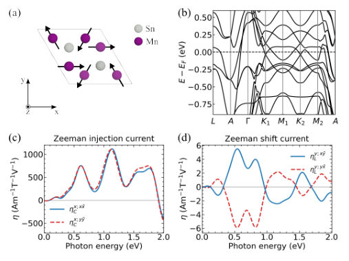
<figcaption class="paper-figure-caption"><b>Fig 3.</b> FIG. 3. (a) Crystal structure of Mn3Sn, with black arrows indicating the coplanar magnetic order. (b) Electronic band structure. (c) Circularly polarized components of the Zeeman injection current, ηx;x˜x C and ηx;y˜y C , as functions of photon en- ergy. (d) Linearly polarized components of the Zeeman shift current, ηy;x˜y L and ηy;y˜x L , as functions of photon energy.</figcaption>
</figure>
</div>

<p><strong>Summary.</strong> This paper theoretically derives and analyzes Zeeman shift and injection currents generated when light couples both electric and magnetic fields. The key finding is that these novel currents can be finite in centrosymmetric materials, bypassing symmetry restrictions that forbid conventional photocurrents. This offers a powerful, measurable method for electrically probing magnetic order in condensed matter systems.</p>
<p><strong>Why it may be interesting.</strong> This work provides a detailed, symmetry-based theoretical framework for accessing spin-dependent transport properties using light, which is highly relevant for understanding light-matter interactions in magnetic quantum materials.</p>
<details>
<summary>Detailed structure</summary>
<p><strong>Main problem.</strong> The study investigates the generation of novel dc photocurrents—Zeeman shift and injection currents—arising from the joint coupling of the electric and magnetic components of incident light.</p>
<p><strong>Main result.</strong> These Zeeman photocurrents can persist and be significant even in centrosymmetric materials where conventional electric-dipole photocurrents are symmetry-forbidden, opening a new pathway for electrical detection of magnetic order.</p>
<p><strong>Method.</strong> The authors employ quantum perturbation theory and density-matrix formalism to derive explicit microscopic expressions for the relevant conductivity tensors.</p>
<p><strong>Model / system.</strong> The theory is applied to general systems, demonstrated using a kagome model with antiferromagnetic order and calculated for the specific magnetic material Mn3Sn.</p>
<p><strong>Key observables.</strong> Zeeman shift current ($\langle \hat{J}_{a}^{	ext{Zshift}} 
angle$) and Zeeman injection current ($\langle \hat{J}_{a}^{	ext{Zinj}} 
angle$) densities.</p>
<p><strong>Important parameters / regimes.</strong> Illumination electric field amplitude ($E=10^4 	ext{ V/m}$); photon energy ($\omega$); Zeeman coupling strength ($\mu_B B$).</p>
<p><strong>Assumptions / limitations.</strong> The analysis operates in the weak-coupling limit and assumes the dc response is dominated by the resonant interference term ($   ext{W}_{EB}$).</p>
<p><strong>Figures summary.</strong> Figures illustrate the photocurrent generation mechanism, contrasting the vanishing EE term in centrosymmetric systems with the finite EB interference term, and show the calculated energy dependence of the Zeeman currents for Mn3Sn.</p>
<p><strong>Paper structure.</strong> The paper first establishes the theoretical framework using perturbation theory, then performs a detailed symmetry analysis comparing conventional vs. Zeeman responses, and finally applies these findings to model systems like the kagome lattice and Mn3Sn.</p>
</details>
<details>
<summary>Abstract</summary>
<p>The conversion of light into electrical currents enables energy harvesting and photodetection. Conventional second-order dc photocurrents are driven by the electric component of light through electric-dipole coupling and require broken inversion symmetry. Here, we show that the electric and magnetic components of light jointly generate Zeeman shift and injection currents. Using quantum perturbation theory, we derive explicit microscopic expressions for their conductivity tensors. We systematically classify the symmetry constraints on these responses and show how they differ from those governing conventional photocurrents. In particular, both responses can occur in centrosymmetric systems with spin-orbit coupling or noncollinear magnetic order, irrespective of time-reversal symmetry. A centrosymmetric kagome model exhibits broadband responses. First-principles calculations for Mn$_3$Sn further predict Zeeman injection and shift current densities of $10^{2}$-$10^{3}~\mathrm{A/m^{2}}$ and $1$-$10~\mathrm{A/m^{2}}$, respectively, under illumination with an electric-field amplitude $E=10^{4}~\mathrm{V/m}$. These magnitudes place both currents within experimental reach.</p>
</details>
<p><sub><a href="#top">↑ back to top</a></sub></p>

<p><a id="paper-2610.32944"></a></p>
<h3 id="robustness-of-skyrmion-mediated-magnetization-switching-in-perpendicular-magnetic-tunnel-junctions-p-mtjs-to-material-disorder-and-elevated-temperature"><a href="http://arxiv.org/abs/2610.32944v1">Robustness of Skyrmion-Mediated Magnetization Switching in Perpendicular Magnetic Tunnel Junctions (p-MTJs) to Material Disorder and Elevated Temperature</a></h3>
<p><strong>Authors:</strong> Prosenjit Das, Md Mahadi Rajib, Jayasimha Atulasimha<br>
<strong>Type:</strong> theory · <strong>Category:</strong> disordered systems and neural networks · <strong>PDF:</strong> <a href="https://arxiv.org/pdf/2610.32944v1">https://arxiv.org/pdf/2610.32944v1</a><br>
<strong>Analysis basis:</strong> full PDF text, analyzed in chunks
<strong>Topic relevance:</strong> <code>Keldysh / 2PI / non-Gaussian methods</code> <strong>1/5</strong> · <code>analog quantum simulation</code> <strong>1/5</strong> · <code>driven-dissipative phase transition</code> <strong>1/5</strong> · <code>methods for driven-dissipative</code> <strong>1/5</strong> · <code>non-equilibrium universality</code> <strong>1/5</strong> · <code>quantum measurements</code> <strong>1/5</strong> · <code>scars &amp; prethermalization</code> <strong>1/5</strong></p>
<div class="figure-strip-hint">↔ Scroll figures horizontally</div>
<div class="paper-figures-scroll">
<figure class="paper-figure-card">
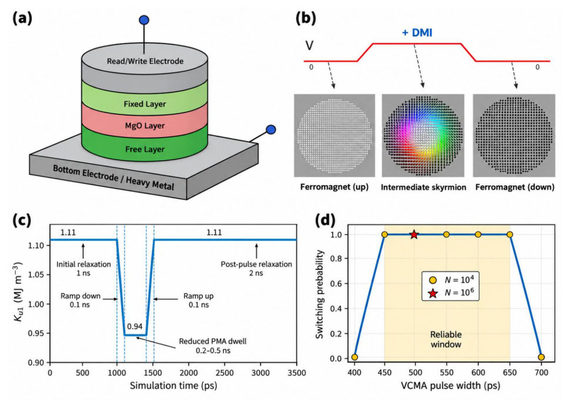
<figcaption class="paper-figure-caption"><b>Fig 1.</b> Figure 1. (a) Schematic of the p-MTJ structure. (b) Ferromagnetic up, intermediate skyrmion, and</figcaption>
</figure>
<figure class="paper-figure-card">
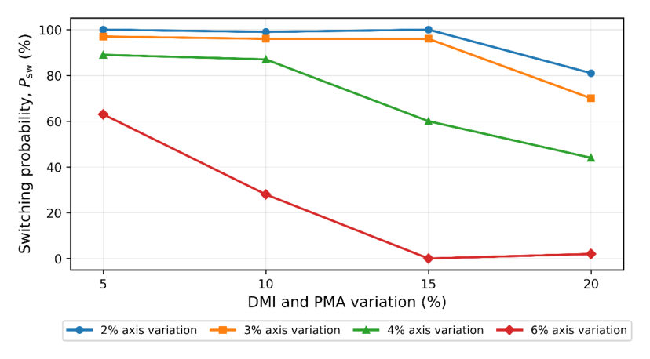
<figcaption class="paper-figure-caption"><b>Fig 2.</b> Figure 2. Switching probability under material disorder as a function of DMI and PMA variation</figcaption>
</figure>
<figure class="paper-figure-card">

<figcaption class="paper-figure-caption"><b>Fig 3.</b> Figure 3 shows switching probability (Psw) as a function of pulse width and temperature for</figcaption>
</figure>
<figure class="paper-figure-card">
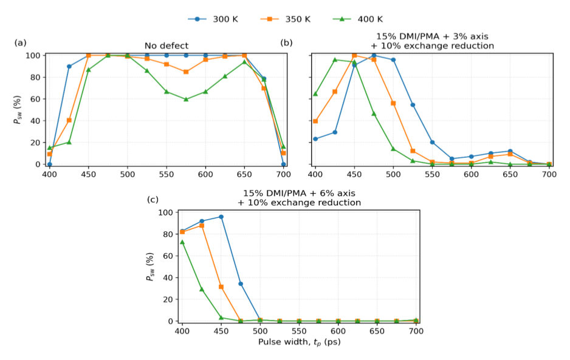
<figcaption class="paper-figure-caption"><b>Fig 4.</b> Figure 3. Switching probability as a function of VCMA pulse width and operating temperature for</figcaption>
</figure>
<figure class="paper-figure-card">
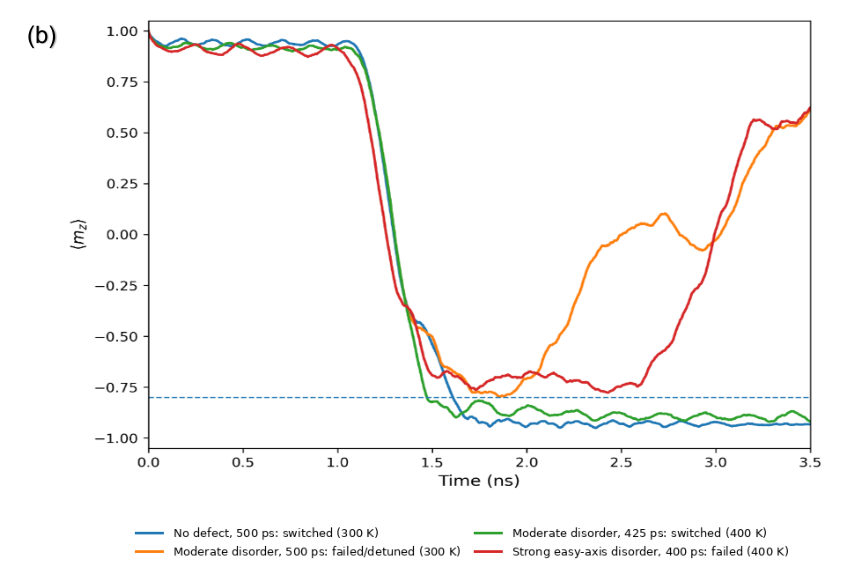
<figcaption class="paper-figure-caption"><b>Fig 5.</b> Figure 4. Representative trajectories illustrate recoverable pulse detuning and residual switching</figcaption>
</figure>
</div>

<p><strong>Summary.</strong> This work simulates magnetization switching in p-MTJs using stochastic micromagnetics to test reliability under disorder and heat. It finds that while timing errors can be corrected by adjusting the electrical pulse, strong material disorder causes permanent degradation of the switching mechanism. This establishes a critical distinction between recoverable timing issues and fundamental material limitations.</p>
<p><strong>Why it may be interesting.</strong> While focused on magnetism, the methodology of analyzing failure modes due to quenched disorder (e.g., easy-axis misalignment) and thermal fluctuations maps conceptually onto studying robustness in complex quantum systems or spin glasses.</p>
<details>
<summary>Detailed structure</summary>
<p><strong>Main problem.</strong> The paper assesses the reliability of skyrmion-mediated magnetization switching in p-MTJs when subjected to realistic material disorder and elevated temperature.</p>
<p><strong>Main result.</strong> The study distinguishes between recoverable reliability loss due to timing shifts (which can be fixed by pulse re-tuning) and permanent degradation caused by strong disorder.</p>
<p><strong>Method.</strong> Stochastic micromagnetic simulations were employed to model magnetization dynamics governed by the LLG equation.</p>
<p><strong>Model / system.</strong> The system is a 100 nm perpendicular magnetic tunnel junction (p-MTJ) modeled with a polycrystalline structure exhibiting grain-scale variations in Dzyaloshinskii-Moriya interaction (DMI), perpendicular magnetic anisotropy (PMA), and easy-axis orientation.</p>
<p><strong>Key observables.</strong> Switching probability (P_sw), out-of-plane magnetization (m_z), and topological charge (Q).</p>
<p><strong>Important parameters / regimes.</strong> Temperature (300 K to 350 K), disorder strength (e.g., 15% DMI/PMA variation, 6% easy-axis misalignment), and pulse width (optimized vs. fixed).</p>
<p><strong>Assumptions / limitations.</strong> The dynamics are governed by the LLG equation, and disorder is modeled using Gaussian random variables over a Voronoi tessellation.</p>
<p><strong>Figures summary.</strong> Figures illustrate the dependence of P_sw on pulse width and temperature, comparing defect-free, moderately disordered, and strongly disordered structures, and comparing switching trajectories under different disorder levels.</p>
<p><strong>Paper structure.</strong> The paper first establishes baseline switching reliability, then analyzes the effect of temperature shifts on optimal pulse timing, and finally contrasts the effects of moderate versus strong disorder, concluding with a clear distinction between timing-related and structure-related failure modes.</p>
</details>
<details>
<summary>Abstract</summary>
<p>Transient-skyrmion mediated voltage-controlled magnetic anisotropy (VCMA) switching is a fast and energy efficient way to magnetization reversal, but its reliability under realistic material disorder and thermal fluctuations remain unclear. In this work, we use stochastic micromagnetic simulations of a 100 nm perpendicular magnetic tunnel junction to study switching reliability under grain-scale variations in Dzyaloshinskii-Moriya interaction, perpendicular magnetic anisotropy, easy-axis orientation, and intergrain exchange coupling. We find that switching remains robust under moderate disorder, with 100% switching observed in 10^4 stochastic simulations after pulse width optimization at both 300 K and 350 K. Increasing the temperature from 300 to 350 K shifts the optimum VCMA pulse width from ~475 to ~450 ps, indicating that an apparent reduction in switching probability at a fixed pulse duration can be primarily due to pulse detuning. In contrast, strong easy-axis disorder reduces the maximum switching probability even after pulse-width optimization, indicating degradation of the switching dynamics. We further show that, under strong easy-axis disorder a transient skyrmion still forms while the subsequent post-pulse dynamics fails to complete the magnetization reversal. Our study therefore establishes the distinction between recoverable reliability due to timing shifts and permanent disorder-induced degradation that simply cannot be recovered by pulse re-tuning. Finally, for no disorders but at room temperature, 100% switching is observed with 10^6 stochastic simulations with correct pulse shaping.</p>
</details>
<p><sub><a href="#top">↑ back to top</a></sub></p>

<p><a id="paper-2610.32529"></a></p>
<h3 id="effect-of-oxygen-plasma-treatment-on-the-structural-and-superconducting-properties-of-atomic-layer-deposited-nbn-thin-films"><a href="http://arxiv.org/abs/2610.32529v1">Effect of oxygen plasma treatment on the structural and superconducting properties of atomic-layer-deposited NbN thin films</a></h3>
<p><strong>Authors:</strong> Nitesh Yerra, Mustafa Teke, Felix Otto, Marco Diegel, Detlef Born, Uwe Hübner, Nan Du, Mario Ziegler, Sahitya Varma Vegesna, Heidemarie Krüger<br>
<strong>Type:</strong> experiment · <strong>Category:</strong> other · <strong>PDF:</strong> <a href="https://arxiv.org/pdf/2610.32529v1">https://arxiv.org/pdf/2610.32529v1</a><br>
<strong>Analysis basis:</strong> full PDF text, analyzed in chunks
<strong>Topic relevance:</strong> <code>correlated / nonlocal dissipation</code> <strong>1/5</strong> · <code>driven-dissipative phase transition</code> <strong>1/5</strong> · <code>quantum measurements</code> <strong>1/5</strong></p>
<div class="figure-strip-hint">↔ Scroll figures horizontally</div>
<div class="paper-figures-scroll">
<figure class="paper-figure-card">
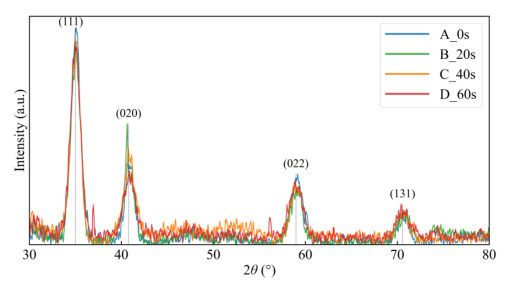
<figcaption class="paper-figure-caption"><b>Fig 1.</b> FIG. 1. Background-subtracted GIXRD patterns of δ-NbN thin films exposed to O2 plasma for 0, 20, 40, and 60 s (sam- ples A_0s, B_20s, C_40s, and D_60s). The diffraction peaks correspond to the (111), (020), (022), and (131) reflections of cubic NbN. The raw GIXRD intensities were background- subtracted using a baseline fitted manually in the Malvern Panalytical HighScore Plus 4.9 powder diffraction software, smoothed with a Savitzky-Golay filter, and shown on a com- mon arbitrary intensity scale (arb. units). Only the range of 30◦–80◦is shown as a zoomed view, since the region below is dominated by the substrate signal.</figcaption>
</figure>
<figure class="paper-figure-card">
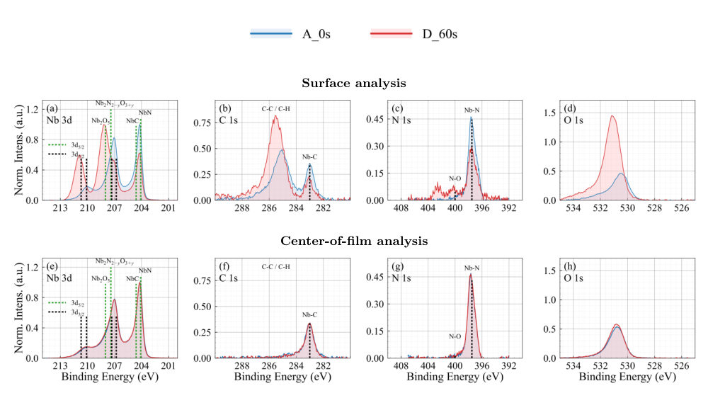
<figcaption class="paper-figure-caption"><b>Fig 2.</b> FIG. 2. Background-subtracted XPS core-level spectra of the samples before and after sputtering, with gridlines added for direct intensity comparison. Top row, surface analysis (as-received): (a) Nb 3d, (b) C 1s, (c) N 1s, (d) O 1s. Bottom row, center-of-film analysis (after 15 min Ar+ sputtering): (e) Nb 3d, (f) C 1s, (g) N 1s, (h) O 1s. Blue: A_0s; red: D_60s. Dotted vertical lines mark the reference binding energies of the assigned components. In the Nb 3d panels the green lines are the 3d5/2 lines of NbN (204.1 eV), NbC (204.6 eV), Nb2N2−yO3+y (207.4 eV), and Nb2O5 (208.0 eV), and the black lines are the corresponding 3d3/2 partners, displaced by the spin-orbit splitting of 2.7 eV and...</figcaption>
</figure>
<figure class="paper-figure-card">
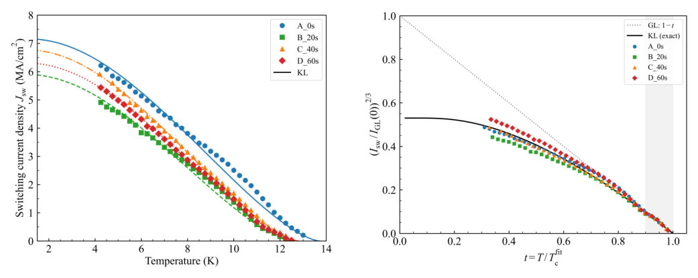
<figcaption class="paper-figure-caption"><b>Fig 3.</b> FIG. 3. (a) Temperature dependence of the switching current density Jsw(T) for all four samples (symbols) together with dirty- limit Kupriyanov-Lukichev (KL) fits, Eqs. (1) and (2) (lines). (b) Reduced representation (Isw/IGL(0))2/3 versus t = T/T fit c following Ref. [31]. Dotted line: Ginzburg-Landau (GL) prediction 1 −t; solid line: exact dirty-limit KL solution of the Usadel equations, saturating at 0.3862/3 = 0.53 [32]. A line fit over the finite window raises the expected saturation to 0.55–0.56. The shaded band marks the GL fit window t ≥0.9 from which IGL(0) and T fit c are obtained.</figcaption>
</figure>
<figure class="paper-figure-card">
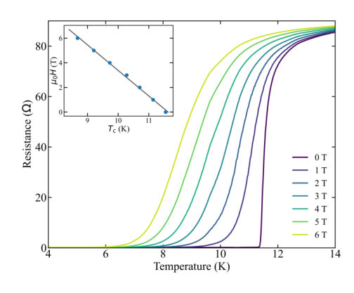
<figcaption class="paper-figure-caption"><b>Fig 4.</b> FIG. 4. Resistance of the untreated Hall-bar structure as a function of temperature in perpendicular magnetic fields of 0 to 6 T in steps of 1 T. Inset: upper critical field from the midpoints of the transitions (symbols) together with a linear fit (line). The slope of −2.07 T/K yields D = 0.53 cm2/s through Eq. (A1).</figcaption>
</figure>
</div>

<p><strong>Summary.</strong> This work systematically investigates how controlled oxygen plasma oxidation affects superconducting $ ext{NbN}$ thin films. Using a combination of structural, chemical, and electrical measurements, the authors demonstrate that surface oxidation forms a stable oxide layer that primarily affects the supercurrent near the critical temperature via the proximity effect, leaving the core superconducting properties largely intact at lower temperatures.</p>
<p><strong>Why it may be interesting.</strong> While focused on superconductivity, the study of surface degradation and the proximity effect in ultrathin films touches upon concepts relevant to open quantum systems and decoherence, where surface interactions dictate bulk quantum behavior.</p>
<details>
<summary>Detailed structure</summary>
<p><strong>Main problem.</strong> The study investigates how controlled surface oxidation of atomic-layer-deposited Niobium Nitride (NbN) thin films affects their structural integrity and superconducting properties.</p>
<p><strong>Main result.</strong> Surface oxidation to $ ext{Nb}_2   ext{O}_5$ occurs, increasing normal-state resistivity but leaving the bulk crystalline $\delta$-NbN intact. This oxidation narrows the supercurrent temperature range near $T_c$ via the proximity effect without significantly reducing low-temperature current capacity.</p>
<p><strong>Method.</strong> The researchers used controlled $   ext{O}_2$ plasma treatment on $ ext{NbN}$ films, followed by comprehensive characterization using X-ray photoelectron spectroscopy (XPS), X-ray diffraction (XRD), and transport measurements on nanowires.</p>
<p><strong>Model / system.</strong> The physical system is ultrathin, superconducting $ ext{NbN}$ films patterned into nanowires. The analysis incorporates the proximity effect, modeling the surface oxide layer as a weakly superconducting or normal metal that interacts with the bulk superconductor.</p>
<p><strong>Key observables.</strong> Surface oxidation state ($ ext{Nb}_2   ext{O}_5$), normal-state resistivity (dc and optical), critical temperature ($T_c$), transition width ($\Delta T_c$), and temperature dependence of supercurrent.</p>
<p><strong>Important parameters / regimes.</strong> Plasma dose (0 to 60 s), nanowire width ($500 	ext{ nm}$), and temperature range near $T_c$.</p>
<p><strong>Assumptions / limitations.</strong> The surface oxidation is self-limiting, and the superconducting degradation near $T_c$ is primarily governed by the proximity effect from the surface oxide layer.</p>
<p><strong>Figures summary.</strong> The notes indicate measurements of structural changes (XRD), chemical changes (XPS comparing surface vs. bulk), and electrical transport curves ($R(T)$ and $I_c(T)$) showing the temperature-dependent suppression of supercurrent.</p>
<p><strong>Paper structure.</strong> The paper follows a structure of problem definition (surface oxidation concern), methodology (ALD growth, plasma treatment, multi-modal characterization), results presentation (structural, compositional, and electrical findings), and a theoretical interpretation based on the proximity effect.</p>
</details>
<details>
<summary>Abstract</summary>
<p>Surface oxidation is a common concern for ultrathin NbN superconducting devices, yet which superconducting properties it affects has not been established for films grown by plasma-enhanced atomic layer deposition. We expose NbN films about 11.4 nm thick to an O$_2$ plasma for 0 to 60 s, which oxidizes the surface without etching the film, and characterize the same sample series by X-ray diffraction, X-ray photoelectron spectroscopy (XPS), and transport measurements on 500 nm wide nanowires. XPS of the surface and the underlying layer shows that the plasma converts the surface to Nb$_2$O$_5$, whereas the bulk of the treated film is chemically identical to that of the untreated film. Crystalline $δ$-NbN remains intact. During exposure, the total film thickness rises and saturates between 40 and 60 s, indicating self-limiting surface oxide growth. The normal-state resistivity rises by 21% (dc) and 25% (optical) with the plasma dose, while the critical temperature and transition width are unchanged. The switching current densities of 4.9-6.2 MA/cm$^2$ at 4.2 K show no systematic dependence on the plasma dose. Their temperature dependence follows the dirty-limit depairing current of Kupriyanov and Lukichev, and the extrapolated switching currents reach 39-46% of the depairing current calculated from the optical resistivity and diffusion coefficient, in agreement with the width dependence reported for nanowires from the same process. The oxygen signature is confined to temperatures near $T_c$, where the supercurrent of the treated wires vanishes at least 0.5 K earlier than that of the untreated wire, consistent with a partially oxidized surface layer that acts on the film by the proximity effect. At these doses, oxygen narrows the temperature range of the supercurrent from above but does not systematically reduce the low-temperature current-carrying capacity of the wires.</p>
</details>
<p><sub><a href="#top">↑ back to top</a></sub></p>

<p><a id="paper-2610.32791"></a></p>
<h3 id="ginzburg-landau-theory-with-elastic-incompatibility-describes-the-liquid-g-phase-crystal-state-diagram"><a href="http://arxiv.org/abs/2610.32791v1">Ginzburg-Landau Theory with Elastic Incompatibility Describes the Liquid-G-phase-Crystal State Diagram</a></h3>
<p><strong>Authors:</strong> Alessio Zaccone, Konrad Samwer<br>
<strong>Type:</strong> theory · <strong>Category:</strong> statistical mechanics · <strong>PDF:</strong> <a href="https://arxiv.org/pdf/2610.32791v1">https://arxiv.org/pdf/2610.32791v1</a><br>
<strong>Analysis basis:</strong> full PDF text, analyzed in chunks
<strong>Topic relevance:</strong> <code>Frenkel-Kontorova</code> <strong>1/5</strong> · <code>Keldysh / 2PI / non-Gaussian methods</code> <strong>1/5</strong> · <code>driven-dissipative phase transition</code> <strong>1/5</strong></p>
<div class="figure-strip-hint">↔ Scroll figures horizontally</div>
<div class="paper-figures-scroll">
<figure class="paper-figure-card">
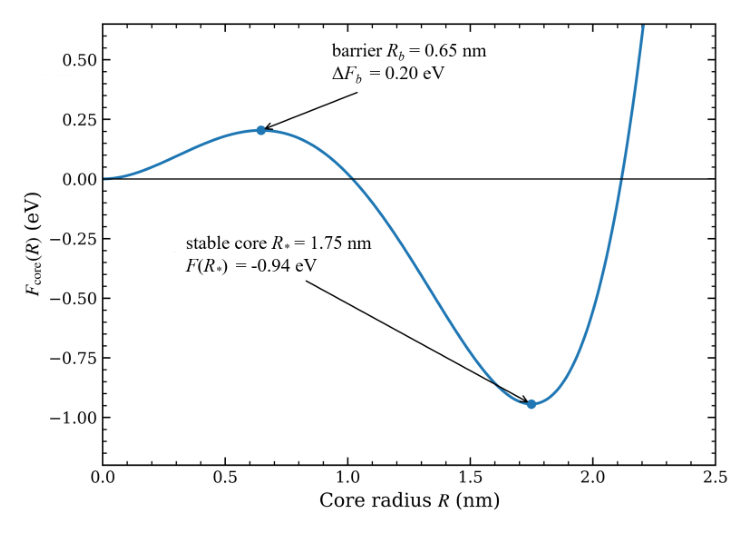
<figcaption class="paper-figure-caption"><b>Fig 1.</b> FIG. 1. Illustrative finite-core free energy from Eq. (98) (blue curve). The vertical scale is</figcaption>
</figure>
<figure class="paper-figure-card">
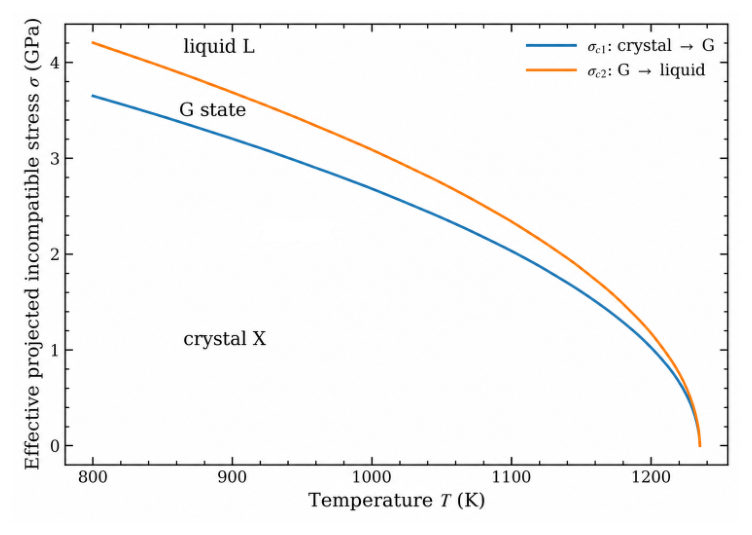
<figcaption class="paper-figure-caption"><b>Fig 2.</b> FIG. 2. Illustrative temperature–stress state diagram showing the two physical boundaries σc1 and</figcaption>
</figure>
</div>

<p><strong>Summary.</strong> This work develops a mechanically consistent Ginzburg-Landau theory to explain the liquid-glass-crystal phase diagram in metallic liquids. It shows that the intermediate, heterogeneous G state emerges due to a structural analogue of type-II superconductivity, where incompatible internal stresses are screened by the surrounding disordered matrix. The theory provides testable predictions linking structural healing lengths and stress screening lengths.</p>
<p><strong>Why it may be interesting.</strong> The concept of using elastic incompatibility and stress screening mechanisms, analogous to superconducting physics, to describe structural phase transitions in disordered materials is a powerful, generalizable theoretical framework for understanding complex many-body dynamics.</p>
<details>
<summary>Detailed structure</summary>
<p><strong>Main problem.</strong> To determine if a mechanism analogous to type-II superconductivity can arise in structural condensed matter systems, specifically in deeply undercooled metallic liquids.</p>
<p><strong>Main result.</strong> The theory predicts a heterogeneous G state, analogous to a mixed superconducting state, where structural order resides in cores and stress screening is carried by the surrounding disordered matrix.</p>
<p><strong>Method.</strong> Derivation of a mechanically consistent Ginzburg-Landau theory incorporating elastic incompatibility and non-affine internal strain.</p>
<p><strong>Model / system.</strong> The system is deeply undercooled metallic liquids undergoing a first-order transition between liquid (L), heterogeneous glassy (G), and crystalline (X) states. The model uses an order parameter $\phi(r)$ and incorporates structural mismatch ($\epsilon^*_{ij}$) and non-affine strain ($p_{ij}$).</p>
<p><strong>Key observables.</strong> Stress-decay, structural-healing, non-affine susceptibility, and kinetic measurements.</p>
<p><strong>Important parameters / regimes.</strong> Structural screening length ($\lambda_σ$), structural healing length ($\xi_G$), and the structural Ginzburg-Landau parameter ($\kappa_G = \lambda_σ/\xi_G$).</p>
<p><strong>Assumptions / limitations.</strong> The analogy to superconductivity is used as an organizing principle, and the theory relies on projecting the elastic strain onto a deviatoric channel to simplify the free energy functional.</p>
<p><strong>Figures summary.</strong> Figure 2 illustrates the temperature–stress state diagram showing boundaries $\sigma_{c1}$ and $\sigma_{c2}$ defining the stability regions of the different phases.</p>
<p><strong>Paper structure.</strong> The paper builds the theory by defining the free energy functional based on elastic incompatibility, deriving the mechanical equilibrium equations, and then projecting the problem onto a reduced, mechanically consistent Ginzburg-Landau form to predict the mixed-state texture.</p>
</details>
<details>
<summary>Abstract</summary>
<p>We derive a mechanically consistent Ginzburg-Landau theory for the metastable heterogeneous G state reported in deeply undercooled metallic liquids. The central result is that type-II-like mixed-state physics can emerge structurally with the random internal stress field playing the role of the magnetic field. Frozen eigenstrain due to elastic incompatibility between ordered cores and the amorphous matrix generates incompatible stress, while the non-affine internal strain in the liquid-like matrix in between the ordered cores relaxes that stress over a finite screening length $λ_σ$ (analogous to the London length in the superconducting problem). Structural order heals over a distinct mechanically-dressed length $ξ_G$; their ratio $κ_G=λ_σ/ξ_G$ provides the structural counterpart of the Ginzburg-Landau parameter. Because the matrix is transiently rigid yet locally relaxational only over an intermediate time window, the same mechanism selects crystal for slow protocols, a heterogeneous G state at intermediate rates, and a homogeneous L-like glass under rapid arrest. Residual incompatibility frustrates coarsening, allowing finite ordered cores and screened, orientation-dependent core interactions. The resulting texture is an inverted Abrikosov analogue: structural order resides in the cores, whereas incompatible-stress screening is carried by the surrounding disordered matrix. The theory yields direct simulation and experimental tests through stress-decay, structural-healing, non-affine-susceptibility, and kinetic measurements.</p>
</details>
<p><sub><a href="#top">↑ back to top</a></sub></p>

<p><a id="paper-2610.32714"></a></p>
<h3 id="nano-arpes-observation-of-a-flat-band-at-the-barm-point-in-24-twisted-bilayer-graphene"><a href="http://arxiv.org/abs/2610.32714v1">Nano-ARPES observation of a flat band at the \bar{M} point in 2.4° twisted bilayer graphene</a></h3>
<p><strong>Authors:</strong> Giovanna Feraco, Przemysław Przybysz, Oreste De Luca, Ying Wang, Pavel Dudin, José Avila, Jianting Ye, Paweł Dąbrowski, Paweł J. Kowalczyk, Jagoda Sławińska, Petra Rudolf, Antonija Grubišić-Čabo<br>
<strong>Type:</strong> both · <strong>Category:</strong> strongly correlated electrons · <strong>PDF:</strong> <a href="https://arxiv.org/pdf/2610.32714v1">https://arxiv.org/pdf/2610.32714v1</a><br>
<strong>Analysis basis:</strong> full PDF text, analyzed in chunks
<strong>Topic relevance:</strong> <code>Keldysh / 2PI / non-Gaussian methods</code> <strong>1/5</strong> · <code>analog quantum simulation</code> <strong>1/5</strong> · <code>quantum measurements</code> <strong>1/5</strong></p>
<div class="figure-strip-hint">↔ Scroll figures horizontally</div>
<div class="paper-figures-scroll">
<figure class="paper-figure-card">
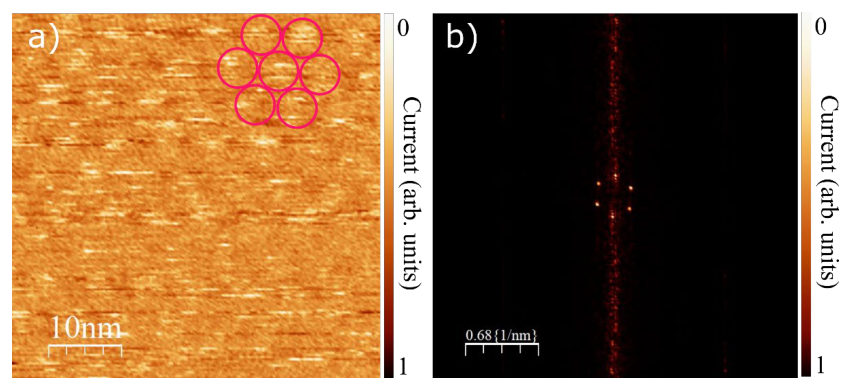
<figcaption class="paper-figure-caption"><b>Fig 1.</b> Figure 1: (a) Conductive atomic force microscopy (c-AFM) image showing a moiré pattern caused by the interference of the atom densities. (b) 2D fast Fourier transform of the moiré pattern exhibiting a hexagonal symmetry.</figcaption>
</figure>
<figure class="paper-figure-card">
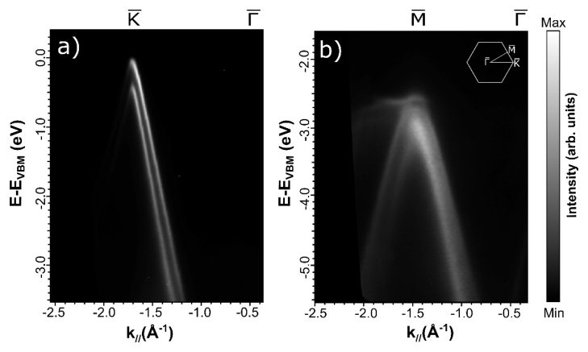
<figcaption class="paper-figure-caption"><b>Fig 2.</b> Figure 2: Energy band dispersion of twisted bilayer graphene (twist angle 2.4 ± 0.2°) along the two high symmetry directions Γഥ−Κഥ (a) and Γഥ−Μഥ (b). The high-symmetry directions are indicated in the Brillouin zone sketch in the inset in panel (b).</figcaption>
</figure>
<figure class="paper-figure-card">
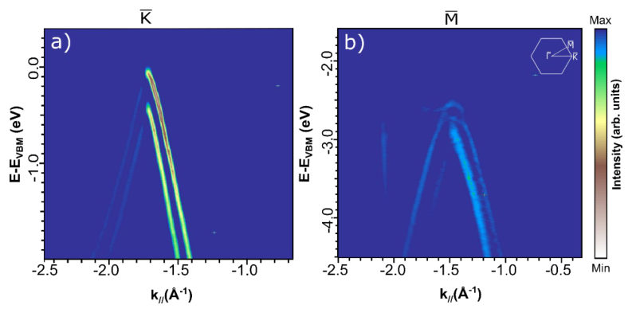
<figcaption class="paper-figure-caption"><b>Fig 3.</b> Figure 3: 2D curvature of the band structure of twisted bilayer graphene (twist angle 𝟐𝟐. 𝟒𝟒 ± 𝟎𝟎. 𝟐𝟐°) along the two high symmetry directions Γഥ−Κഥ (a) and Γഥ−Μഥ (b). 2D curvature data correspond to the energy dispersion spectra shown in Figure 2. Flat band dispersion is only present at the high symmetry point Μഥ, and completely absent at the 𝐊𝐊ഥ point. High-symmetry points are indicated in the Brillouin zone sketch inset in (b)</figcaption>
</figure>
<figure class="paper-figure-card">
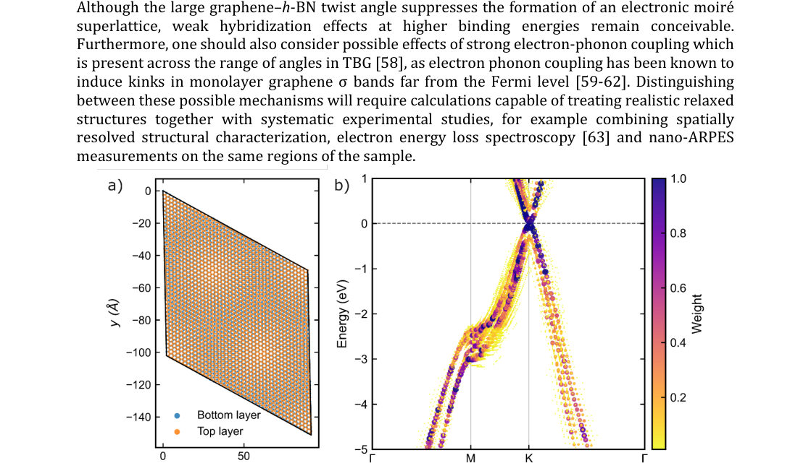
<figcaption class="paper-figure-caption"><b>Fig 4.</b> Figure 4: (a) The supercell of twisted bilayer graphene (twist angle 2.4°) used in the TB calculations. (b) TB calculations along the Γഥ−Μഥ −𝐾𝐾ഥ− Γഥ direction. Different colors refer to different intensity of the bands.</figcaption>
</figure>
<figure class="paper-figure-card">
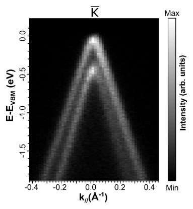
<figcaption class="paper-figure-caption"><b>Fig 5.</b> Figure 1: Nano-ARPES along the 𝐴𝐴̅ −𝐾𝐾ഥ−𝐴𝐴̅ symmetry direction; the data show no flat band.</figcaption>
</figure>
</div>

<p><strong>Summary.</strong> This work reports the first direct observation of a flat electronic band at the M point in 2.4° twisted bilayer graphene using nano-ARPES. The observed feature cannot be explained by standard theoretical models (TB or DFT), suggesting that structural relaxations or local inhomogeneities are crucial for understanding correlated phases in moiré materials.</p>
<p><strong>Why it may be interesting.</strong> The unexpected appearance of a correlated state (flat band) away from the magic angle and K point suggests that structural inhomogeneities or local distortions can induce novel correlated phases, expanding the parameter space for correlated electron physics.</p>
<details>
<summary>Detailed structure</summary>
<p><strong>Main problem.</strong> To investigate the electronic structure of twisted bilayer graphene (TBG) beyond the conventional focus near the K point, specifically observing and understanding a flat band at the M point.</p>
<p><strong>Main result.</strong> The authors report the first observation of a flat band at the M point in 2.4° TBG using nano-ARPES, which could not be reproduced by standard tight-binding or DFT calculations.</p>
<p><strong>Method.</strong> The study combines angle-resolved photoemission spectroscopy (nano-ARPES) experiments with theoretical modeling using tight-binding (TB) and Density Functional Theory (DFT).</p>
<p><strong>Model / system.</strong> The system is twisted bilayer graphene (TBG) at a 2.4° twist angle. Theoretical models utilize atomistic $\pi$-orbital tight-binding methods and DFT, while experiments are conducted at the SOLEIL synchrotron.</p>
<p><strong>Key observables.</strong> Electronic band structure, flat band dispersion (or lack thereof), Fermi velocity, and spectral weight along high-symmetry paths ($\Gamma-	ext{M}-K-\Gamma$).</p>
<p><strong>Important parameters / regimes.</strong> Twist angle ($  heta = 2.4^\circ$), temperature ($T = 70$ K), and the comparison between experimental measurements and theoretical predictions.</p>
<p><strong>Assumptions / limitations.</strong> The initial theoretical models assume an ideal, rigid lattice structure, which is contradicted by the experimental observation of the M-point flat band.</p>
<p><strong>Figures summary.</strong> Figures show nano-ARPES data confirming a weakly dispersive feature at the M point, while theoretical calculations (TB and DFT) for similar angles fail to predict this feature.</p>
<p><strong>Paper structure.</strong> The paper establishes the context of flat bands in TBG, presents the novel ARPES observation at the M point, compares this finding against predictions from both TB and DFT models, and concludes that the origin likely involves structural effects neglected by the current models.</p>
</details>
<details>
<summary>Abstract</summary>
<p>The emergence of flat bands in twisted bilayer graphene at the so-called magic angle reveals a range of intriguing phases, such as superconductivity and Mott insulating states, resulting from electrons entering a correlated state. This establishes twisted bilayer graphene as an excellent platform for exploring correlation effects in many-body phases and across various twist angles. However, in most cases, the twist angle is not an easy parameter to control because it exhibits structural instabilities such as relaxation and reconstruction that reduce the correlation effects. Here, we report the unexpected appearance of a flat band at the \bar{M} point far from the Fermi level in a 2.4° twisted bilayer graphene, directly visualized by angle-resolved photoemission spectroscopy. Our work is the first observation of flat bands away from the \bar{K} point in twisted bilayer graphene and highlights the need to probe the entire Brillouin zone to fully capture electronic states in twisted structures.</p>
</details>
<p><sub><a href="#top">↑ back to top</a></sub></p>

<p><a id="paper-2610.31893"></a></p>
<h3 id="heat-current-and-noise-in-a-point-like-junction-between-normal-metal-and-fractional-quantum-hall-edge-state-with-math775math"><a href="http://arxiv.org/abs/2610.31893v1">Heat current and noise in a point-like junction between normal metal and fractional quantum hall edge state with $ν= 1/3$</a></h3>
<p><strong>Authors:</strong> Redouane Zamoum, Houssam Eddine Farhi, Abdellah Touati, Adeline Crépieux<br>
<strong>Type:</strong> theory · <strong>Category:</strong> strongly correlated electrons · <strong>PDF:</strong> <a href="https://arxiv.org/pdf/2610.31893v1">https://arxiv.org/pdf/2610.31893v1</a><br>
<strong>Analysis basis:</strong> full PDF text, analyzed in chunks
<strong>Topic relevance:</strong> <code>Keldysh / 2PI / non-Gaussian methods</code> <strong>1/5</strong> · <code>correlated / nonlocal dissipation</code> <strong>1/5</strong></p>
<div class="figure-strip-hint">↔ Scroll figures horizontally</div>
<div class="paper-figures-scroll">
<figure class="paper-figure-card">
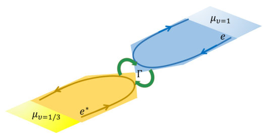
<figcaption class="paper-figure-caption"><b>Fig 1.</b> FIG. 1. Schematic description of the system representing a metallic lead with chemical potential µν=1 associated with a non-interacting edge state, connected via a QPC to an FQH system with chemical potential µν=1/3 associated with an edge state with filling factor ν = 1/3. Electrons e and quasi- particles e∗can be transmitted from one edge to the other with scattering amplitude Γ.</figcaption>
</figure>
<figure class="paper-figure-card">
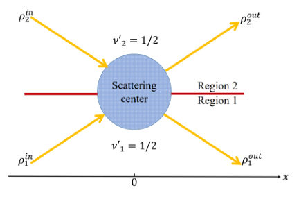
<figcaption class="paper-figure-caption"><b>Fig 2.</b> FIG. 2. Four probe geometry of the effective system (at ν′ = 1/2). The incoming densities are at x &lt; 0 whereas the outgoing densities are at x &gt; 0.</figcaption>
</figure>
<figure class="paper-figure-card">
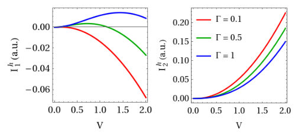
<figcaption class="paper-figure-caption"><b>Fig 3.</b> FIG. 3. Heat currents Ih 1 and Ih 2 as a function of voltage for various values of the scattering amplitude Γ at temperature kBT = 0.02.</figcaption>
</figure>
<figure class="paper-figure-card">
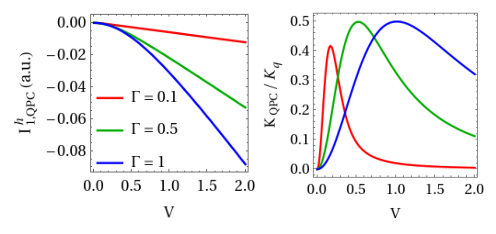
<figcaption class="paper-figure-caption"><b>Fig 4.</b> FIG. 5. QPC heat current Ih 1,QPC and thermal conductance KQPC as a function of voltage for various values of Γ at kBT = 0.02.</figcaption>
</figure>
<figure class="paper-figure-card">
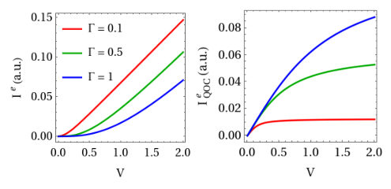
<figcaption class="paper-figure-caption"><b>Fig 5.</b> FIG. 4. Electrical currents Ie and Ie QPC as a function of volt- age for various values of the scattering amplitude Γ at tem- perature at kBT = 0.02.</figcaption>
</figure>
</div>

<p><strong>Summary.</strong> This theoretical paper analyzes heat current and noise in a junction between a normal metal and a $
u=1/3$ FQH edge state. By modeling the system as an interacting Tomonaga-Luttinger liquid, the authors calculate heat transport properties. The key findings include frequency-dependent noise asymmetry and a rescaling of the Wiedemann-Franz law due to strong electron interactions.</p>
<p><strong>Why it may be interesting.</strong> The study provides detailed, quantitative predictions for heat transport and noise in strongly interacting, chiral quantum systems, offering insights into how electron-electron interactions modify fundamental transport coefficients like the Wiedemann-Franz law.</p>
<details>
<summary>Detailed structure</summary>
<p><strong>Main problem.</strong> The study investigates heat current correlations and noise in a junction connecting a normal metal to a fractional quantum Hall (FQH) edge state.</p>
<p><strong>Main result.</strong> The analysis reveals asymmetric frequency behavior in heat current correlations and shows that the Lorenz number is rescaled in the weak backscattering regime, suggesting interaction effects on fundamental transport laws.</p>
<p><strong>Method.</strong> The authors employ bosonization and refermionization techniques to solve the interacting Tomonaga-Luttinger liquid model, calculating heat current and finite-frequency noise correlators.</p>
<p><strong>Model / system.</strong> The system is a hybrid edge structure involving two chiral channels ($
u=1$ and $
u=1/3$) coupled via a Quantum Point Contact (QPC). The physics is modeled by mapping the system to an interacting TLL with $\kappa=1/2$.</p>
<p><strong>Key observables.</strong> Heat current ($I_h$), thermal conductance ($K$), and finite-frequency heat auto- and cross-correlation noise functions ($S_h(\omega)$).</p>
<p><strong>Important parameters / regimes.</strong> Filling factor $
u=1/3$, interaction parameter $\kappa=1/2$, tunneling amplitude $\Gamma$, and applied voltage $V$. Key regimes include weak and strong backscattering.</p>
<p><strong>Assumptions / limitations.</strong> The system is modeled as an interacting TLL, and calculations rely on the application of refermionization techniques.</p>
<p><strong>Figures summary.</strong> Figures illustrate the four-probe geometry and plot the calculated heat currents ($I_{h1}, I_{h2}$) versus voltage for varying scattering strengths ($\Gamma$).</p>
<p><strong>Paper structure.</strong> The paper systematically derives the heat current and noise operators, calculates the average heat current and thermal conductance, and then computes the heat noise correlators across various limits (zero frequency, equilibrium, low/high temperature, weak/strong backscattering).</p>
</details>
<details>
<summary>Abstract</summary>
<p>In this study, we investigate heat current correlations between two edge states coupled through a constriction in the fractional quantum Hall regime at filling factor $ν= 1/3$. This configuration allows us to map the system onto an interacting Tomonaga-Luttinger liquid with a local impurity, where the interaction parameter takes the value $κ= 1/2$. This specific parameter value enables the application of the refermionization method. By solving the refermionized Hamiltonian, we compute the heat current and evaluate the finite-frequency heat auto- and cross-correlation functions. Our results reveal asymmetric behavior with frequency, corresponding to absorption and emission noise, respectively. Furthermore, we examine several limiting cases, including low- and high-temperature limits as well as strong- and weak-backscattering regimes. In the weak backscattering regime, the Lorenz number approaches $4L_0$ at high voltage, suggesting a rescaling of the Wiedemann-Franz law due to interactions. A detailed study of the heat current fluctuations has made it possible to identify and derive expressions for the dominant contribution in the various regimes of interest, and to reveal the predominance of partition noise.</p>
</details>
<p><sub><a href="#top">↑ back to top</a></sub></p>

<p><a id="paper-2610.32272"></a></p>
<h3 id="nonlocal-thermoelectric-transport-in-degenerate-electron-systems"><a href="http://arxiv.org/abs/2610.32272v1">Nonlocal Thermoelectric Transport in Degenerate Electron Systems</a></h3>
<p><strong>Authors:</strong> Albert Beardo, Adrián Ramos-Martín, Jordi Tur-Prats, F. Xavier Alvarez, Juan Camacho<br>
<strong>Type:</strong> theory · <strong>Category:</strong> statistical mechanics · <strong>PDF:</strong> <a href="https://arxiv.org/pdf/2610.32272v1">https://arxiv.org/pdf/2610.32272v1</a><br>
<strong>Analysis basis:</strong> full PDF text, analyzed in chunks
<strong>Topic relevance:</strong> <code>Keldysh / 2PI / non-Gaussian methods</code> <strong>1/5</strong> · <code>correlated / nonlocal dissipation</code> <strong>1/5</strong></p>
<div class="figure-strip-hint">↔ Scroll figures horizontally</div>
<div class="paper-figures-scroll">
<figure class="paper-figure-card">
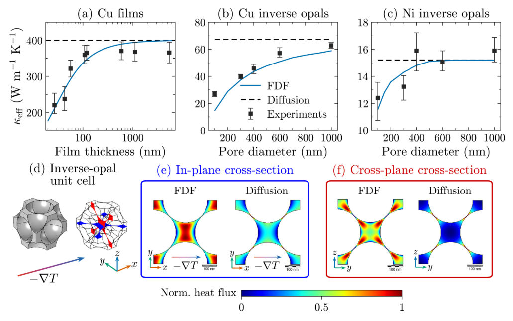
<figcaption class="paper-figure-caption"><b>Fig 1.</b> FIG. 1. Apparent thermal conductivity and heat flux profiles in metallic nanostructures at room temperature. The FDF predictions are compared with experimental data [29, 30]; the standard Fourier prediction is also shown as a reference. (a) Apparent thermal conductivity of copper films as a function of thickness. (b,c) Apparent thermal conductivity of copper and nickel inverse opals, respectively, as a function of pore diameter for the fully packed FCC geometry illustrated in (d). (e,f) Heat-flux profiles, normalized by their maximum value, across the blue (in-plane) and red (cross-plane) cross-sections indicated in (d) for a Cu inverse opal with a pore size of 300 nm. The FDF predicts...</figcaption>
</figure>
<figure class="paper-figure-card">
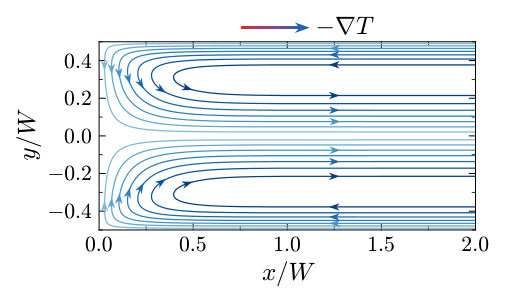
<figcaption class="paper-figure-caption"><b>Fig 2.</b> FIG. 2. Closure of electrical counterflows j(r) under a thermal gradient in an open-circuit strip. Electrical-current stream- lines obtained from the finite-geometry coupled FDF for a two-dimensional (d = 2) parabolic band (z = 2), with r = τC/τR = 1 and W = vF τC. For an electron-like Seebeck response (S0 &lt; 0), with the hot end on the left, the electri- cal current flows toward the cold end at the strip center and returns toward the hot end near the walls. These oppositely directed currents close through transverse currents near the electrically insulating ends. Only the hot end of the strip is shown; the closure near the cold end is equivalent.</figcaption>
</figure>
<figure class="paper-figure-card">
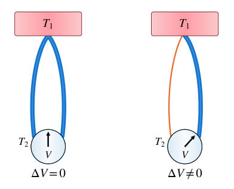
<figcaption class="paper-figure-caption"><b>Fig 3.</b> FIG. 3. Differential Seebeck effect in wires made of the same metal. (Left) When both branches are thick, their effective Seebeck coefficients are identical and the measured electro- motive force vanishes. (Right) When one branch has a trans- verse size comparable to the kinetic lengths while the other remains thick, their finite-size Seebeck coefficients differ and a nonzero differential voltage is generated. The thick branch provides an internal bulk reference, so that the common bulk thermopower cancels.</figcaption>
</figure>
<figure class="paper-figure-card">
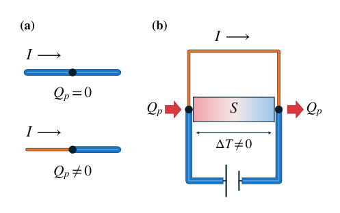
<figcaption class="paper-figure-caption"><b>Fig 4.</b> FIG. 4. Differential Peltier effect in wires made of the same metal. (a, top) When both wires are thick, their Peltier co- efficients are identical and no net Peltier heat is exchanged with the environment at the junction, QP = 0. (a, bottom) When one wire has a transverse size comparable to ℓC while the other remains thick, their finite-width Peltier coefficients differ and a nonzero Peltier heat QP = I(Πthin −Πthick) is absorbed or released at the junction. (b) A possible configu- ration in which the corresponding heating and cooling gener- ate a temperature difference across an electrically insulating sample S.</figcaption>
</figure>
<figure class="paper-figure-card">
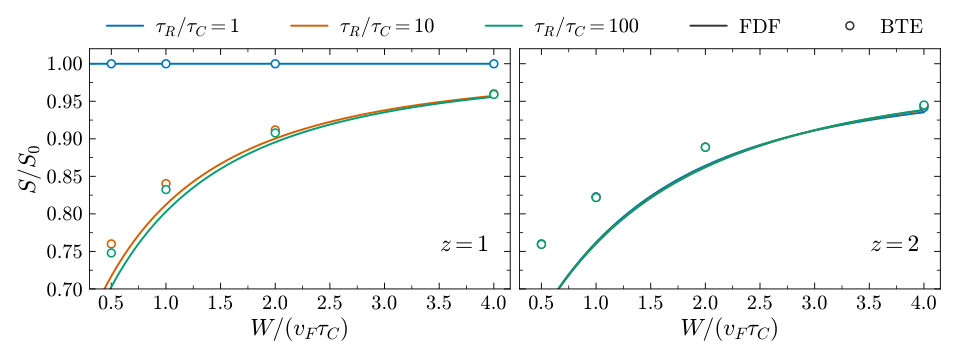
<figcaption class="paper-figure-caption"><b>Fig 5.</b> FIG. 5. Finite-width Seebeck response used as a kinetic benchmark of the FDF for a two-dimensional strip of thickness W. Curves are the complete coupled FDF predictions and symbols are spatially resolved BTE results as the relative strength of momentum-conserving and resistive scattering is varied through τR/τC = 1/r. Left: linear dispersion (z = 1). Right: parabolic dispersion (z = 2); the FDF curves and BTE symbols for the different values of r overlap. The agreement improves systematically with increasing W/(vF τC). The strip is used as a controlled benchmark of the constitutive closure, not as a privileged experimental geometry.</figcaption>
</figure>
</div>

<p><strong>Summary.</strong> This work develops the Flux Derivative Formalism (FDF) to create a rigorous, nonlocal macroscopic theory for thermoelectric transport in degenerate electron systems. By extending the Boltzmann equation, the authors derive coupled constitutive equations that remain valid even when transport lengths are comparable to the electron mean free path. This provides a powerful, geometry-dependent tool for modeling heat and charge flow in complex nanoscale devices.</p>
<p><strong>Why it may be interesting.</strong> While focused on solid-state transport, the development of a systematic kinetic closure (FDF) to handle non-equilibrium dynamics over finite length scales is a general theoretical tool applicable to open quantum systems where spatial gradients are crucial.</p>
<details>
<summary>Detailed structure</summary>
<p><strong>Main problem.</strong> The paper addresses the breakdown of local constitutive descriptions for thermoelectric transport when characteristic length scales approach the carrier mean free path.</p>
<p><strong>Main result.</strong> They derive a closed, macroscopic, nonlocal description for coupled charge and heat transport, predicting geometry-dependent transport coefficients while preserving fundamental thermodynamic relations.</p>
<p><strong>Method.</strong> The core methodology is the Flux Derivative Formalism (FDF), a kinetic framework used to systematically derive nonlocal constitutive equations from the Boltzmann transport equation.</p>
<p><strong>Model / system.</strong> The study focuses on degenerate electron systems (metals) undergoing coupled charge and heat transport, using the Callaway model for collision physics.</p>
<p><strong>Key observables.</strong> Geometry-dependent Seebeck and Peltier coefficients, the full geometry-dependent transport matrix, and the electronic heat equation taking a Guyer-Krumhansl form.</p>
<p><strong>Important parameters / regimes.</strong> The ratio of transport length scales to the carrier mean free path, and the relative strength of resistive versus momentum-conserving collisions.</p>
<p><strong>Assumptions / limitations.</strong> The approach assumes that the non-equilibrium distribution function can be systematically expanded in terms of spatial and temporal derivatives of the transport fluxes, and that the system is degenerate.</p>
<p><strong>Figures summary.</strong> Figure 7 benchmarks the normalized Seebeck coefficient comparison between the FDF and BTE methods for linear and parabolic dispersions in 2D and 3D geometries.</p>
<p><strong>Paper structure.</strong> The paper systematically introduces the need for nonlocal treatment, details the FDF methodology by expanding the distribution function, and applies this framework to derive coupled equations for charge and heat transport, concluding with comparisons to established Boltzmann solutions.</p>
</details>
<details>
<summary>Abstract</summary>
<p>When the characteristic length scales of transport become comparable to the carrier mean free path, the local constitutive description breaks down. We develop the Flux Derivative Formalism (FDF), a kinetic framework that provides a systematic route from the Boltzmann equation to nonlocal constitutive equations. We use it to derive coupled equations for charge and heat transport in isotropic electronic systems, together with boundary conditions derived consistently within this approach, yielding a closed macroscopic description that can be applied to complex geometries without solving the full Boltzmann problem. The explicit transport coefficients are derived for degenerate electronic systems within the Callaway model. A central result is that varying the relative strength of resistive and momentum-conserving collisions changes the transport coefficients but not the non-local constitutive structure, providing a continuous description from resistive-dominated transport to the collective hydrodynamic limit. The electronic heat equation takes a Guyer-Krumhansl form, whose predictions are validated against size-dependent thermal-transport measurements in Cu and Ni. For coupled thermoelectric transport, the resulting boundary-value problem determines the complete geometry-dependent transport matrix. Comparison with spatially resolved Boltzmann solutions confirms quantitative accuracy down to transverse dimensions comparable to the carrier mean free path. The theory predicts geometry-dependent Seebeck and Peltier coefficients while preserving Onsager reciprocity and the Kelvin relation.</p>
</details>
<p><sub><a href="#top">↑ back to top</a></sub></p>

<p><a id="paper-2610.31843"></a></p>
<h3 id="optical-signatures-of-rashba-dresselhaus-coupling-across-franz-keldysh-and-landau-regimes-in-two-dimensional-semiconductors"><a href="http://arxiv.org/abs/2610.31843v1">Optical signatures of Rashba--Dresselhaus coupling across Franz--Keldysh and Landau regimes in two-dimensional semiconductors</a></h3>
<p><strong>Authors:</strong> Bahruz Suleymanli, Samir Tariverdiev, B. Tanatar<br>
<strong>Type:</strong> theory · <strong>Category:</strong> other · <strong>PDF:</strong> <a href="https://arxiv.org/pdf/2610.31843v1">https://arxiv.org/pdf/2610.31843v1</a><br>
<strong>Analysis basis:</strong> full PDF text, analyzed in chunks
<strong>Topic relevance:</strong> <code>Keldysh / 2PI / non-Gaussian methods</code> <strong>1/5</strong> · <code>interference shaping light</code> <strong>1/5</strong></p>
<div class="figure-strip-hint">↔ Scroll figures horizontally</div>
<div class="paper-figures-scroll">
<figure class="paper-figure-card">
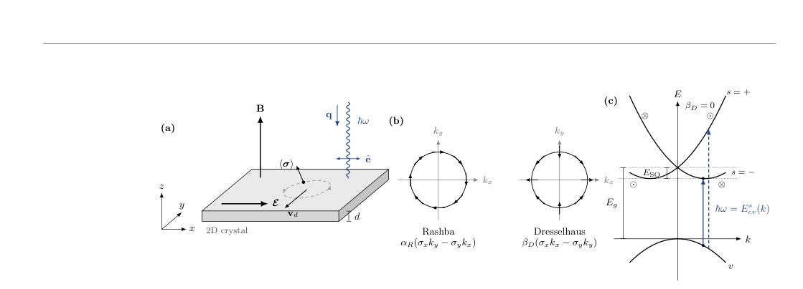
<figcaption class="paper-figure-caption"><b>Fig 1.</b> Figure 1. Schematic representation of the model. (a) A 2D crystal of effective thickness d subjected to a perpendicular magnetic field B ∥ˆz and an in-plane electric field E ∥ˆx, together with normally incident monochromatic light of angular frequency ω, wave vector q ∥ˆz, and in-plane polarization ˆe. The dashed orbit shows the cyclotron motion, vd = c E × B/B2 denotes the Hall drift velocity, and ⟨σ⟩indicates the spin orientation. (b) In-plane spin orientations for Rashba and Dresselhaus couplings on constant-energy contours. (c) Direct interband optical transitions with ℏω = Es cv(k) for the pure Rashba limit βD = 0, where s = ± labels the two spin branches, ⊙ and ⊗indicate in-plane...</figcaption>
</figure>
<figure class="paper-figure-card">
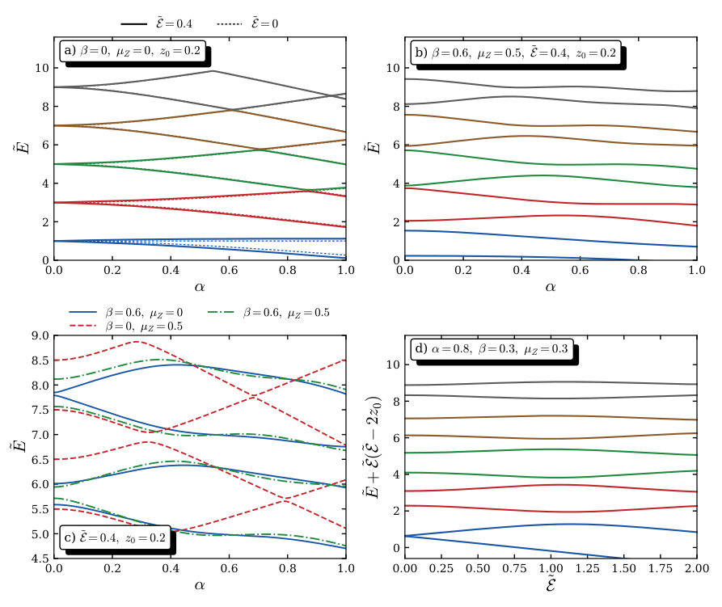
<figcaption class="paper-figure-caption"><b>Fig 2.</b> Figure 2. Spin-orbit coupled energy spectrum in crossed fields. (a) Comparison of the finite and zero electric field spectra for the pure Rashba case. (b) Spectrum in the presence of Dresselhaus and Zeeman terms. (c) Comparison of the effects of the Dresselhaus and Zeeman couplings near the level anticrossings. (d) Dependence of the spectrum on the electric field.</figcaption>
</figure>
<figure class="paper-figure-card">
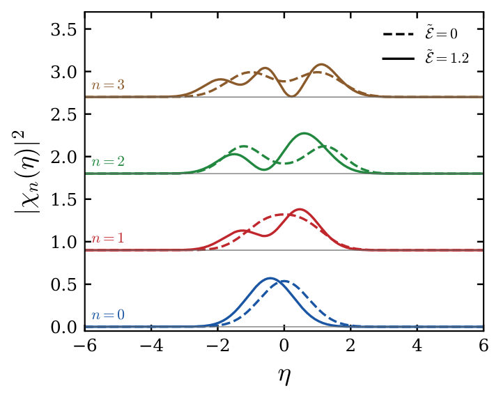
<figcaption class="paper-figure-caption"><b>Fig 3.</b> Figure 3. Spinor densities |χn(η)|2 of the four lowest states for ˜E = 0 and 1.2, with α = 0.8, β = 0.3 and µZ = 0.3. The curves for different n are vertically shifted for clarity.</figcaption>
</figure>
<figure class="paper-figure-card">
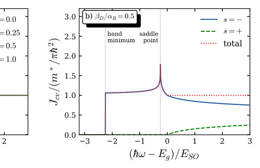
<figcaption class="paper-figure-caption"><b>Fig 4.</b> Figure 4. Joint density of states at zero electric and magnetic fields. (a) Total JDOS for several values of βD/αR. (b) Contributions of the s = ± branches and their sum for βD/αR = 0.5.</figcaption>
</figure>
<figure class="paper-figure-card">
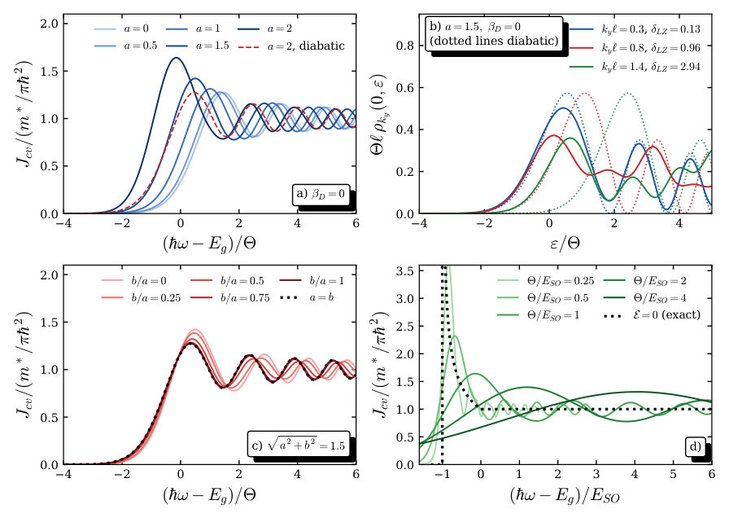
<figcaption class="paper-figure-caption"><b>Fig 5.</b> Figure 5. Franz–Keldysh electroabsorption with spin-orbit coupling at B = 0. (a) JDOS for pure Rashba coupling. (b) Local density of states Θℓρky(0, ε) for different kyℓ. (c) JDOS for different Rashba and Dresselhaus coupling ratios at fixed √</figcaption>
</figure>
</div>

<p><strong>Summary.</strong> This work presents a unified theory for optical absorption in 2D semiconductors with combined Rashba and Dresselhaus spin-orbit couplings under external E and B fields. It predicts unique spectral features—like specific singularities or doublet splitting—that allow for the direct, field-dependent measurement of the SOC strength. This is highly relevant for quantum optics and condensed matter spectroscopy.</p>
<p><strong>Why it may be interesting.</strong> The detailed mapping of SOC effects onto measurable optical spectra provides a powerful, non-invasive spectroscopic tool to characterize spin-orbit coupling parameters in solid-state quantum materials.</p>
<details>
<summary>Detailed structure</summary>
<p><strong>Main problem.</strong> The paper develops a unified theoretical framework to describe the interband optical response of 2D semiconductors when subjected to simultaneous Rashba and Dresselhaus spin-orbit couplings in the presence of both electric and magnetic fields.</p>
<p><strong>Main result.</strong> The theory predicts distinct optical signatures for different field regimes, such as the characteristic inverse square root singularity for pure Rashba coupling at zero field, and opposite shifts in Landau doublets in crossed fields.</p>
<p><strong>Method.</strong> The analysis involves solving the Hamiltonian governing electron-hole pair relative motion, leading to calculations of the joint density of states (JDOS) and the optical absorption coefficient.</p>
<p><strong>Model / system.</strong> The system is a two-dimensional semiconductor modeled by a Hamiltonian incorporating kinetic energy, Zeeman coupling, and both Rashba ($\alpha_R$) and Dresselhaus ($eta_D$) SOC terms. The response is calculated via the imaginary part of the dielectric function.</p>
<p><strong>Key observables.</strong> Joint density of states (JDOS), optical absorption coefficient $A(\omega)$, and the energy spectrum $E_{nky}$ in various field configurations.</p>
<p><strong>Important parameters / regimes.</strong> Rashba coupling constant ($\alpha_R$), Dresselhaus coupling constant ($eta_D$), electric field ($E$), and perpendicular magnetic field ($B$).</p>
<p><strong>Assumptions / limitations.</strong> The analysis utilizes the constant-matrix-element approximation and neglects the momentum dependence of the interband transition matrix elements.</p>
<p><strong>Figures summary.</strong> Figures illustrate the energy spectrum in crossed fields, the evolution of the JDOS with electric field strength, and the comparison of magnetoabsorption lines for different SOC strengths.</p>
<p><strong>Paper structure.</strong> The paper systematically analyzes the optical response across different limits: zero field (distinguishing Rashba/Dresselhaus), zero magnetic field (Franz-Keldysh crossover), zero electric field (Landau levels), and finally, the combined crossed-field regime.</p>
</details>
<details>
<summary>Abstract</summary>
<p>We develop a unified theory of the interband optical response of a two-dimensional semiconductor with simultaneous Rashba and Dresselhaus spin-orbit couplings in electric and magnetic fields. In crossed fields, the in-plane electric field generates an effective spin-orbit drift field that modifies the Landau spectrum and spinor states, while at zero magnetic field the problem maps onto Landau--Zener spin dynamics.At zero external fields, the total joint density of states above the band gap remains unchanged, while characteristic subgap structures appear. Pure Rashba coupling produces an inverse square root singularity, whereas a finite Dresselhaus term gives a step and a logarithmic peak, allowing the two couplings to be distinguished optically. At zero magnetic field, the Franz--Keldysh response shows a crossover from diabatic to adiabatic spin dynamics as the electric field is reduced. In the weak-field Rashba regime, the field-free singularity becomes a finite peak whose height scales as $\mathcal E^{-1/3}$ and whose position approaches $E_g-E_{\rm SO}$, providing a direct measure of the Rashba energy. In a perpendicular magnetic field, spin-orbit coupling shifts and splits the Landau absorption lines and produces anticrossings without changing their total weights. The Rashba splitting changes from a $\sqrt{B}$ dependence at weak fields to a linear dependence at strong fields. Finally, in crossed electric and magnetic fields, the electric field broadens the Landau lines and drives a continuous crossover toward the Franz--Keldysh regime, while spin-orbit coupling produces opposite shifts and different widths for the two members of each doublet.</p>
</details>
<p><sub><a href="#top">↑ back to top</a></sub></p>

<p><a id="paper-2610.32112"></a></p>
<h3 id="a-self-consistent-two-carrier-drift-diffusion-framework-for-p-n-junctions-extended-diode-equation-power-dissipation-and-base-transit-time"><a href="http://arxiv.org/abs/2610.32112v1">A Self-Consistent Two-Carrier Drift-Diffusion Framework for p-n Junctions: Extended Diode Equation, Power Dissipation, and Base Transit Time</a></h3>
<p><strong>Authors:</strong> Jianhong Yang, Tinglan Li, Gonghao Sun<br>
<strong>Type:</strong> theory · <strong>Category:</strong> other · <strong>PDF:</strong> <a href="https://arxiv.org/pdf/2610.32112v1">https://arxiv.org/pdf/2610.32112v1</a><br>
<strong>Analysis basis:</strong> full PDF text, analyzed in chunks
<strong>Topic relevance:</strong> <code>Keldysh / 2PI / non-Gaussian methods</code> <strong>1/5</strong></p>
<div class="figure-strip-hint">↔ Scroll figures horizontally</div>
<div class="paper-figures-scroll">
<figure class="paper-figure-card">
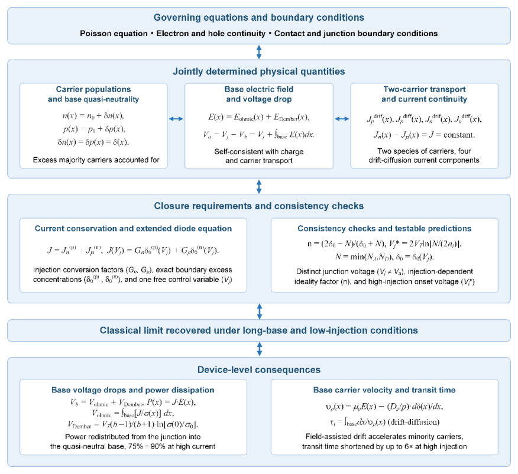
<figcaption class="paper-figure-caption"><b>Fig 1.</b> FIG. 1. Logical structure of the self-consistent two-carrier framework. The excess electrons and holes share one profile 𝛿𝛿(𝑥𝑥) by quasi-neutrality; together with the base field 𝐸𝐸(𝑥𝑥) and the net current 𝐽𝐽 they are locked by the two continuity equations and the two boundary conditions, leaving the junction voltage 𝑉𝑉𝑗𝑗 as the single free parameter that closes the device solution: the profile 𝛿𝛿(𝑥𝑥), the field 𝐸𝐸(𝑥𝑥, 𝑉𝑉𝑗𝑗), the four current components summing to a position-independent 𝐽𝐽, the voltage partition 𝑉𝑉𝑎𝑎= 𝑉𝑉𝑗𝑗+ 𝑉𝑉𝑏𝑏, and the extended diode equation 𝐽𝐽(𝑉𝑉𝑗𝑗) (Secs. II–VI). The device-level consequences, power dissipation (Sec. VII) and base transit time (Sec. VIII), follow from...</figcaption>
</figure>
<figure class="paper-figure-card">
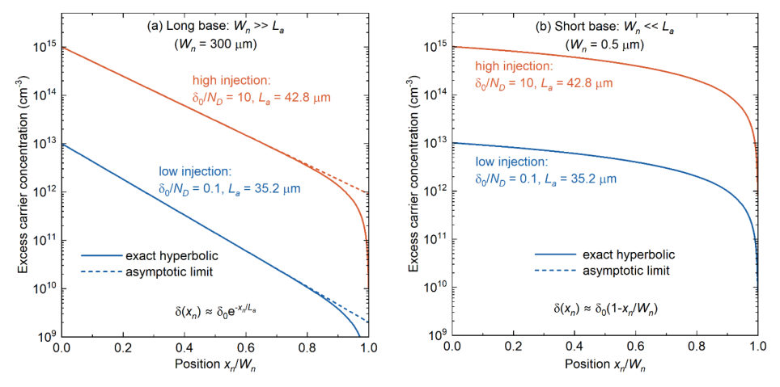
<figcaption class="paper-figure-caption"><b>Fig 2.</b> FIG. 2. Excess-carrier profiles 𝛿𝛿(𝑥𝑥) in the n-type base from the closed-form solution of the ambipolar diffusion equation, with 𝛿𝛿(0) = 𝛿𝛿0 and 𝛿𝛿(𝑊𝑊) = 0. Solid curves are the exact hyperbolic profiles; dashed curves are the asymptotic limits. Two injection levels are shown, set by the boundary value 𝛿𝛿0 (Sec. III C): low injection 𝛿𝛿0/𝑁𝑁𝐷𝐷= 0.1 and high injection 𝛿𝛿0/𝑁𝑁𝐷𝐷= 10 (𝑁𝑁𝐷𝐷= 1014 cm-3, 𝜏𝜏= 1 𝜇𝜇s), with the appropriate diffusion length in each case (𝐿𝐿𝑎𝑎→𝐿𝐿𝑝𝑝= 35.2 𝜇𝜇m at low injection, 𝐿𝐿𝑎𝑎= 42.8 𝜇𝜇m at high injection). (a) Long base (𝑊𝑊= 300 𝜇𝜇m ≫𝐿𝐿𝑎𝑎): the profile reduces to the exponential decay over essentially the whole base, deviating only in the immediate vicinity of the...</figcaption>
</figure>
<figure class="paper-figure-card">
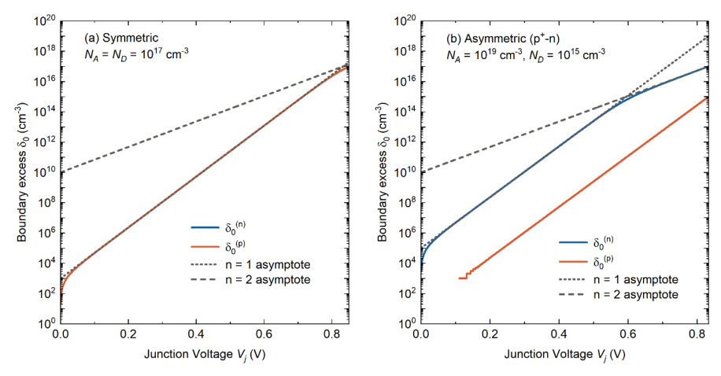
<figcaption class="paper-figure-caption"><b>Fig 3.</b> FIG. 3. Boundary excess concentrations at the two SCR edges, 𝛿𝛿0 (𝑛𝑛) and 𝛿𝛿0 (𝑝𝑝), as functions of the common junction voltage 𝑉𝑉𝑗𝑗, the origin of the boundary-to-boundary locking of the two carrier populations. (a) Symmetric junction (𝑁𝑁𝐴𝐴= 𝑁𝑁𝐷𝐷= 1017 cm-3): the two excess concentrations coincide at every bias, following the low- injection (n = 1, dashed) asymptote at small 𝑉𝑉𝑗𝑗 and the high-injection (n = 2, dash-dotted) asymptote 𝛿𝛿0 ≈ 𝑛𝑛𝑖𝑖𝑒𝑒𝑉𝑉𝑗𝑗/2𝑉𝑉𝑇𝑇 at large 𝑉𝑉𝑗𝑗. (b) Asymmetric p+–n junction (𝑁𝑁𝐴𝐴= 1019 cm-3, 𝑁𝑁𝐷𝐷= 1015 cm-3): at low injection the two boundaries are strongly unequal, each following its own doping-dependent n = 1 asymptote; as 𝑉𝑉𝑗𝑗 increases, the lightly doped side...</figcaption>
</figure>
<figure class="paper-figure-card">
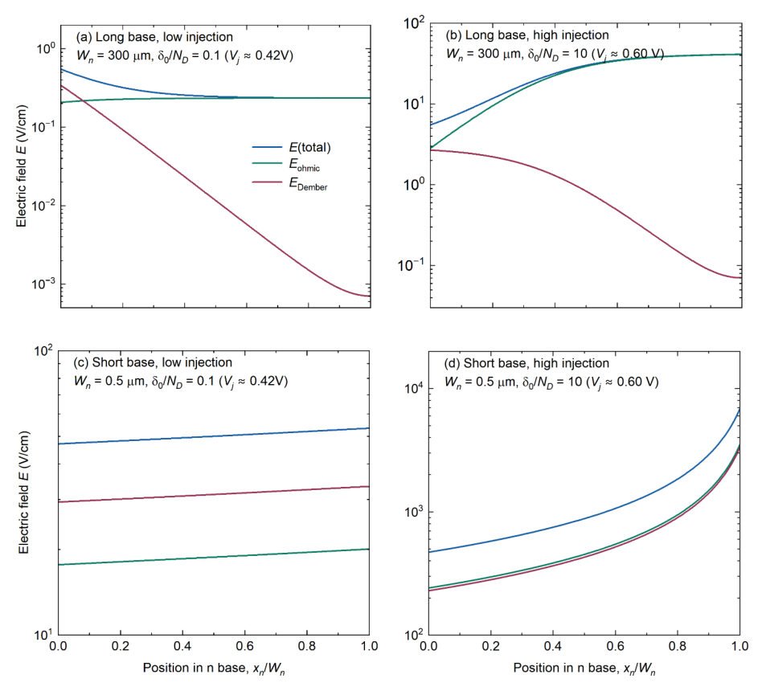
<figcaption class="paper-figure-caption"><b>Fig 4.</b> FIG. 4. Base electric field 𝐸𝐸(𝑥𝑥) in the n-type base and its decomposition into the ohmic part 𝐸𝐸ohmic = 𝐽𝐽/𝜎𝜎(𝑥𝑥), associated with the conductivity modulation 𝜎𝜎(𝑥𝑥) = 𝜎𝜎0 + 𝑞𝑞(𝜇𝜇𝑛𝑛+ 𝜇𝜇𝑝𝑝)𝛿𝛿(𝑥𝑥), and the Dember counter-field 𝐸𝐸Dember = −𝑞𝑞(𝐷𝐷𝑛𝑛−𝐷𝐷𝑝𝑝)𝛿𝛿′(𝑥𝑥)/𝜎𝜎(𝑥𝑥). The total current 𝐽𝐽 is fixed by the closure relation of the asymmetric p+–n junction (𝑁𝑁𝐷𝐷= 1014 cm-3, 𝐿𝐿𝑎𝑎= 42.8 𝜇𝜇m). (a) Long base (𝑊𝑊= 300 𝜇𝜇m), low injection (𝛿𝛿0/𝑁𝑁𝐷𝐷= 0.1, 𝑉𝑉𝑗𝑗≈ 0.42 V): the ohmic term dominates over most of the base; the Dember field is appreciable only near the junction. (b) Long base, high injection (𝛿𝛿0/𝑁𝑁𝐷𝐷= 10, 𝑉𝑉𝑗𝑗≈0.60 V): the Dember field becomes comparable to the ohmic field near the junction,...</figcaption>
</figure>
<figure class="paper-figure-card">
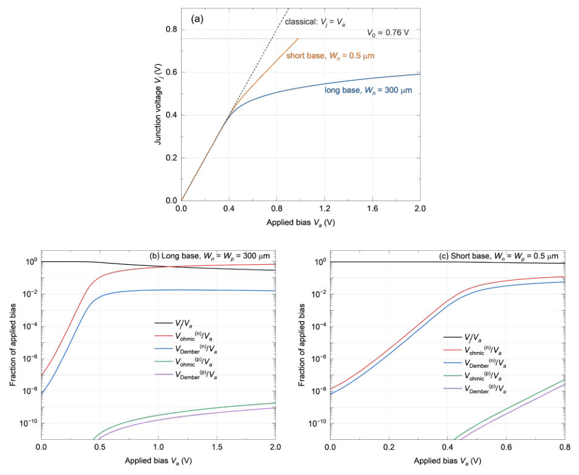
<figcaption class="paper-figure-caption"><b>Fig 5.</b> FIG. 5. Partition of the applied bias over the three series regions, 𝑉𝑉𝑎𝑎= 𝑉𝑉𝑗𝑗+ 𝑉𝑉𝑏𝑏 (𝑛𝑛) + 𝑉𝑉𝑏𝑏 (𝑝𝑝), each base drop separating exactly into ohmic and Dember components. (a) Junction voltage 𝑉𝑉𝑗𝑗 versus applied bias 𝑉𝑉𝑎𝑎 for the long-base (𝑊𝑊= 300 𝜇𝜇m) and short-base (𝑊𝑊= 0.5 𝜇𝜇m) devices. The classical treatment conflates 𝑉𝑉𝑗𝑗 with 𝑉𝑉𝑎𝑎 (dashed line); here 𝑉𝑉𝑗𝑗 falls progressively below 𝑉𝑉𝑎𝑎 as injection rises and saturates toward the built-in potential 𝑉𝑉0 = 0.756 V (dotted line). (b), (c) Fractions of the applied bias carried by the five partition terms for the (b) long-base and (c) short-base devices; the fractions sum to unity at every bias. In the long-base device the n-base drops...</figcaption>
</figure>
</div>

<p><strong>Summary.</strong> This paper presents a self-consistent two-carrier drift-diffusion model to correct the classical understanding of p-n junctions under extreme bias. It derives an extended diode equation that accurately predicts current roll-off and quantifies how power dissipation shifts into the base region. The work provides several parameter-free, testable predictions for semiconductor device physics.</p>
<p><strong>Why it may be interesting.</strong> While focused on solid-state devices, the rigorous derivation of transport equations and the identification of fundamental, universal scaling laws (like the ideality-factor crossover) demonstrate powerful techniques for solving coupled, non-linear transport systems.</p>
<details>
<summary>Detailed structure</summary>
<p><strong>Main problem.</strong> Classical p-n junction theory fails under high bias and high-level injection because it neglects the role of majority carriers and treats the junction voltage incorrectly.</p>
<p><strong>Main result.</strong> The authors develop a self-consistent two-carrier drift-diffusion framework yielding an extended diode equation that intrinsically reproduces high-injection current roll-off and accurately quantifies power dissipation partitioning.</p>
<p><strong>Method.</strong> The framework solves the coupled ambipolar diffusion equation for excess carrier profiles, leading to closed-form expressions for all current components and the junction voltage.</p>
<p><strong>Model / system.</strong> The study models p-n junctions in semiconductor devices, treating excess majority and minority carriers as coupled transport participants governed by drift-diffusion equations.</p>
<p><strong>Key observables.</strong> Extended diode equation, junction voltage drop, power dissipation partitioning (75-90% into base), and base transit time.</p>
<p><strong>Important parameters / regimes.</strong> High bias/high injection regime, doping concentration ($N$), base width ($W$), and diffusion lengths ($L_a$).</p>
<p><strong>Assumptions / limitations.</strong> The framework assumes the quasi-neutrality condition ($\delta_n \approx \delta_p$) and neglects higher-order terms like ambipolar drift, though these are shown to be small corrections.</p>
<p><strong>Figures summary.</strong> Figures illustrate the hyperbolic profile of excess carriers ($\delta(x)$) unifying long-base and short-base limits, and show the coupling of boundary excess concentrations to the single junction voltage $V_j$.</p>
<p><strong>Paper structure.</strong> The paper develops the two-carrier description, derives the extended diode equation, and then dedicates sections to quantifying power dissipation and base transit time corrections.</p>
</details>
<details>
<summary>Abstract</summary>
<p>The classical theory of p-n junctions derives the current-voltage characteristic from minority-carrier diffusion alone: majority carriers are treated as an inert background, the quasi-neutral base as field-free, and the junction voltage as equal to the applied bias. These premises fail together under high bias and high-level injection, where the observed current roll-off is reproduced only by appending an empirical series resistance outside the junction physics. Here we develop a self-consistent two-carrier drift-diffusion framework that introduces no assumption beyond the classical ones. Excess majority carriers are shown to be electrostatically forced transport participants: the ambipolar diffusion equation, closed by exact two-sided boundary conditions, yields a unified excess-carrier profile. The resulting base field separates into an ohmic and a Dember component, and all four current components follow in closed form, their sum being position independent. At device level the framework closes into an extended diode equation that contains the Shockley equation as its low-injection, long-base limit and reproduces the n=2 roll-off intrinsically. The junction voltage emerges as a self-limiting drop confined to the space-charge region and separated from the applied bias by exact base drops. Two device-level corrections are quantified: at high current, 75-90% of the dissipation migrates from the junction into the quasi-neutral base, and field-assisted acceleration shortens the base transit time by up to a factor of six. Three parameter-free predictions follow: a universal ideality-factor crossover that passes through 3/2 when the boundary excess equals the doping, a high-injection onset voltage that scales as 119 mV per decade of doping, and a geometry factor that survives into high injection.</p>
</details>
<p><sub><a href="#top">↑ back to top</a></sub></p>

<p><a id="paper-2610.32532"></a></p>
<h3 id="excitonic-stark-response-induced-by-quantum-capacitance-in-van-der-waals-heterostructures"><a href="http://arxiv.org/abs/2610.32532v1">Excitonic Stark Response Induced by Quantum Capacitance in van der Waals Heterostructures</a></h3>
<p><strong>Authors:</strong> Xiangzhi Hong, Yongkang Jian, Yang Chen, Rukai Cang, Yuanlong Guo, Takashi Taniguchi, Kenji Watanabe, Baigeng Wang, Erfu Liu<br>
<strong>Type:</strong> both · <strong>Category:</strong> other · <strong>PDF:</strong> <a href="https://arxiv.org/pdf/2610.32532v1">https://arxiv.org/pdf/2610.32532v1</a><br>
<strong>Analysis basis:</strong> full PDF text, analyzed in chunks
<strong>Topic relevance:</strong> <code>quantum measurements</code> <strong>1/5</strong></p>
<div class="figure-strip-hint">↔ Scroll figures horizontally</div>
<div class="paper-figures-scroll">
<figure class="paper-figure-card">
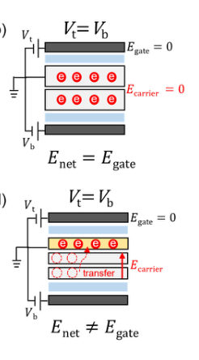
<figcaption class="paper-figure-caption"><b>Fig 1.</b> FIG. 1. Breakdown of the geometric capacitor model induced by charge transfer. Schematic illustrations of symmetric device geometries in (a) and (b) and asymmetric device geometries in (c) and (d). In (a)-(c), the net electric field 𝐸୬ୣ୲ equals the applied</figcaption>
</figure>
<figure class="paper-figure-card">
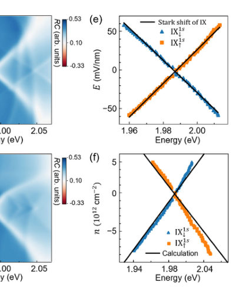
<figcaption class="paper-figure-caption"><b>Fig 2.</b> FIG. 2. Characterization of interlayer excitons and anomalous Stark shift. (a) Schematic of the dual-gated graphene/bilayer MoS2 device. (b) Band alignment indicating that electrostatically induced carriers reside predominantly in graphene. IX↓ , IX↑ denote interlayer excitons with opposite out-of-plane dipole orientations, in which the electrons are located closer to or farther from the graphene layer, respectively. (c),(d) Reflection- contrast maps as functions of out-of-plane electric field at charge neutrality and carrier density at zero applied gate field, respectively. The 1s interlayer excitons IX↓ ଵୱ and IX↑ ଵୱ, as well as the 1s intralayer exciton Xଵୱ, are labeled. (e), (f)...</figcaption>
</figure>
<figure class="paper-figure-card">
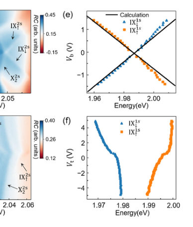
<figcaption class="paper-figure-caption"><b>Fig 3.</b> FIG. 3. Isolation of nongeometric contributions via single-gate scans. (a), (b) Schematics of the two single-gate configurations. Sweeping the bottom gate 𝑉ୠ produces an external electric field parallel to the carrier-induced internal field, whereas sweeping the top gate 𝑉୲ yields an antiparallel configuration. (c),(d) Reflection-contrast maps as functions of gate voltage for the bottom-gate scan, with the top-gate voltage fixed at 0 V, and the top- gate scan, with the bottom-gate voltage fixed at −0.6 V, respectively. The 1s and 2s interlayer excitons, as well as the 2s intralayer excitons from the MoS2 layer proximal (Xଵ ଶୱ) and distal (Xଶ ଶୱ) to graphene, are labeled. (e), (f)...</figcaption>
</figure>
<figure class="paper-figure-card">
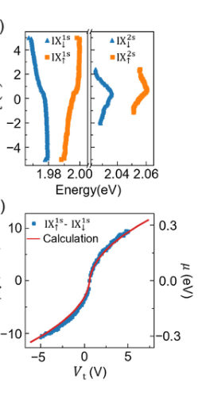
<figcaption class="paper-figure-caption"><b>Fig 4.</b> FIG. 4. Mechanism identification and chemical potential quantification. (a) Second- derivative reflection-contrast map as a function of top-gate voltage (𝑉୲), where the 2s states of both interlayer and intralayer excitons are clearly resolved. (b) Extracted energies of the 1s and 2s interlayer exciton states as a function of 𝑉୲, showing consistent evolution for both exciton series. (c) Evolution of the Δ𝐸ଶୱିଵୱ relative to charge neutrality. The nearly identical changes for the two opposite-dipole branches show that the binding-energy renormalization is largely symmetric with respect to dipole orientation and cannot account for the dipole-dependent spectral asymmetry. (d) Change in the...</figcaption>
</figure>
</div>

<p><strong>Summary.</strong> This research demonstrates that the simple geometric model for electrostatics in vdW heterostructures is insufficient when charge transfer occurs, as quantum capacitance modifies the internal fields. By measuring the dipole-dependent energy splitting of interlayer excitons, the authors successfully isolate and quantify the local chemical potential, establishing a direct optical diagnostic tool for interface electrostatics.</p>
<p><strong>Why it may be interesting.</strong> The work provides a novel, optically accessible method to probe the local chemical potential and the fundamental role of quantum capacitance in nanoscale device electrostatics, bridging quantum optics with condensed matter theory.</p>
<details>
<summary>Detailed structure</summary>
<p><strong>Main problem.</strong> The standard electrostatic description of van der Waals heterostructures fails when interfacial charge transfer occurs, necessitating the inclusion of quantum capacitance effects.</p>
<p><strong>Main result.</strong> The dipole-dependent energy splitting of interlayer excitons provides a direct optical measure of the local chemical potential, revealing the central role of quantum capacitance in interface electrostatics.</p>
<p><strong>Method.</strong> The study uses interlayer excitons as sensitive optical probes to measure energy splittings, comparing results against theoretical models incorporating both geometric and quantum capacitance effects.</p>
<p><strong>Model / system.</strong> The system involves interlayer excitons in van der Waals heterostructures (e.g., MoS2/graphene) under dual-gate control. The model contrasts the simple geometric capacitor approach with one incorporating quantum capacitance ($C_Q$) due to interfacial charge transfer.</p>
<p><strong>Key observables.</strong> Dipole-dependent energy splitting, energy shift dependence on external field, and the separation of Stark effect contributions from many-body screening.</p>
<p><strong>Important parameters / regimes.</strong> Quantum capacitance ($C_Q$), local chemical potential ($\mu$), gate voltages ($V_{top}, V_{bot}$), and dipole orientation ($   ext{IX}\uparrow$ vs. $  ext{IX}\downarrow$).</p>
<p><strong>Assumptions / limitations.</strong> The analysis assumes that the dipole-dependent asymmetry is dominated by the residual Stark effect due to incomplete field cancellation, while the symmetric component tracks many-body screening.</p>
<p><strong>Figures summary.</strong> Figures show the deviation of measured Stark shifts from geometric predictions, the near-identical behavior of binding energy variations for opposite dipoles, and the quantitative agreement between calculated residual Stark splitting using $C_Q$ and experimental measurements.</p>
<p><strong>Paper structure.</strong> The paper first establishes the failure of the geometric model, then uses interlayer excitons to measure dipole-dependent splittings. It systematically separates the Stark effect from many-body screening, ultimately quantifying the chemical potential via the residual splitting predicted by quantum capacitance theory.</p>
</details>
<details>
<summary>Abstract</summary>
<p>Precise electrostatic control in van der Waals heterostructures is commonly described by a geometric capacitor model, which assumes that the internal electric field is fully determined by external gate voltages. Here, we show that this description breaks down in the presence of interfacial charge transfer, where quantum capacitance modifies the internal electrostatics. Using interlayer excitons as local probes, we observe a dipole-dependent energy splitting that persists even when the gate-induced geometric field is nominally canceled. This splitting reflects incomplete cancellation between gate- and carrier-induced fields set by quantum capacitance, while many-body renormalization is largely symmetric with respect to the two opposite dipole orientations, allowing the splitting to provide a direct optical measure of the local chemical potential. Our results reveal the central role of quantum capacitance in interface electrostatics and provide a route to probe it in operando.</p>
</details>
<p><sub><a href="#top">↑ back to top</a></sub></p>

<p><a id="paper-2610.32359"></a></p>
<h3 id="strain-tunable-van-hove-singularity-and-superconducting-dome-in-monolayer-kagome-metal-cstimath810mathbimath811math"><a href="http://arxiv.org/abs/2610.32359v1">Strain-tunable van Hove singularity and superconducting dome in monolayer kagome metal CsTi$_3$Bi$_5$</a></h3>
<p><strong>Authors:</strong> Run Lv, Wenqian Tu, Dingfu Shao, Yuping Sun, Wenjian Lu<br>
<strong>Type:</strong> theory · <strong>Category:</strong> other · <strong>PDF:</strong> <a href="https://arxiv.org/pdf/2610.32359v1">https://arxiv.org/pdf/2610.32359v1</a><br>
<strong>Analysis basis:</strong> full PDF text, analyzed in chunks
<strong>Topic relevance:</strong> <code>analog quantum simulation</code> <strong>1/5</strong></p>
<div class="figure-strip-hint">↔ Scroll figures horizontally</div>
<div class="paper-figures-scroll">
<figure class="paper-figure-card">
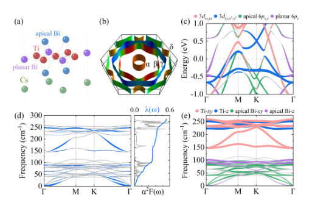
<figcaption class="paper-figure-caption"><b>Fig 1.</b> FIG. 1. (a) Structure of monolayer CsTi3Bi5. (b) Fermi sur- face. (c) Orbital-resolved band structure. (d) Phonon spectra and integrated electron-phonon coupling (EPC) strength λ. The width of the blue lines indicates the mode-resolved EPC strength λqν. (e) Phonon spectra projected onto the vibra- tional modes of Ti and apical Bi atoms.</figcaption>
</figure>
<figure class="paper-figure-card">
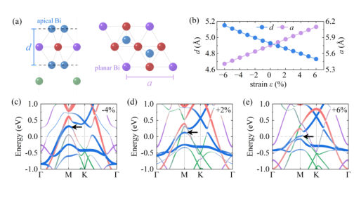
<figcaption class="paper-figure-caption"><b>Fig 2.</b> FIG. 2. (a) Lateral and top views of monolayer CsTi3Bi5. (b) Changes in the distance between apical Bi atoms. (c)-(e) Evolution of the band structure with applied strain ε. The black arrow highlights the VHS located at the M point.</figcaption>
</figure>
<figure class="paper-figure-card">
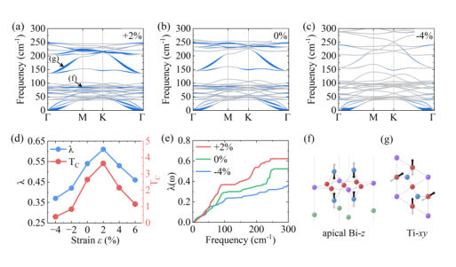
<figcaption class="paper-figure-caption"><b>Fig 3.</b> FIG. 3. (a)-(c) Evolution of the phonon spectra with ap- plied strain ε. The width of blue lines indicates EPC strength λqν. (d) Total EPC strength λ and superconducting transi- tion temperature TC versus strain ε. (e) Frequency-integrated EPC strength λ(ω). (f)-(g) Vibrational schematics of corre- sponding phonon modes.</figcaption>
</figure>
<figure class="paper-figure-card">
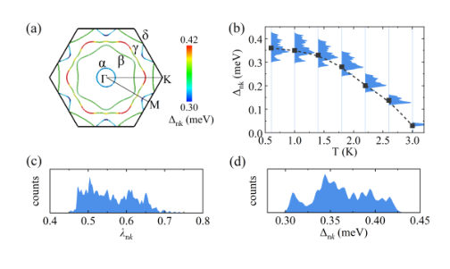
<figcaption class="paper-figure-caption"><b>Fig 4.</b> FIG. 4. (a) Momentum-resolved superconducting gap ∆nk on the Fermi surface, calculated by anisotropic Migdal- Eliashberg theory. (b) Energy distribution of the supercon- ducting gap ∆nk as a function of temperature. (c), (d) Dis- tribution of EPC strength λnk and superconducting gap ∆nk around the Fermi surface.</figcaption>
</figure>
</div>

<p><strong>Summary.</strong> This theoretical study uses first-principles calculations to explore how mechanical strain affects the superconductivity of the kagome metal CsTi3Bi5. Researchers found that applying tensile strain can tune the electronic structure by shifting a Van Hove singularity to the Fermi level. This tuning leads to a maximum superconducting transition temperature of 3.6 K at an optimal strain of +2%, demonstrating strain's potential as a powerful control parameter.</p>
<p><strong>Why it may be interesting.</strong> While focused on condensed matter superconductivity, the concept of using external strain as a continuous, tunable knob to manipulate electronic band structure and enhance emergent quantum phenomena (superconductivity) is a general principle relevant to controlling quantum states in engineered systems.</p>
<details>
<summary>Detailed structure</summary>
<p><strong>Main problem.</strong> The study investigates how biaxial mechanical strain influences the electronic structure and superconductivity of the kagome metal CsTi3Bi5.</p>
<p><strong>Main result.</strong> Tensile strain tunes the Van Hove singularity (VHS) to the Fermi level and induces a dome-shaped superconducting transition temperature (Tc), peaking at 3.6 K at +2% strain.</p>
<p><strong>Method.</strong> The research employs first-principles calculations (DFT) combined with electron-phonon coupling (EPC) theory to model the superconducting properties.</p>
<p><strong>Model / system.</strong> The system is the monolayer kagome metal CsTi3Bi5, which is studied in the two-dimensional limit. The calculations systematically vary the in-plane lattice parameters to apply controlled biaxial strain.</p>
<p><strong>Key observables.</strong> Van Hove Singularity (VHS) shift, superconducting transition temperature (Tc), average superconducting gap magnitude (Delta), and electron-phonon coupling strength (lambda).</p>
<p><strong>Important parameters / regimes.</strong> Biaxial strain (epsilon), optimal tensile strain (+2%), and the resulting maximum Tc of 3.6 K.</p>
<p><strong>Assumptions / limitations.</strong> The study assumes the out-of-plane coordinates of certain atoms are relaxed, and it uses the Allen-Dynes modified McMillan equation for Tc estimation.</p>
<p><strong>Figures summary.</strong> Figures illustrate the evolution of the band structure and VHS with strain, the phonon spectra and mode-resolved EPC strength vs. strain, and the resulting dome-shaped Tc dependence on strain.</p>
<p><strong>Paper structure.</strong> The paper follows a structure of first establishing the material as a promising platform, then systematically applying strain via DFT calculations to track the electronic structure changes (VHS tuning), followed by calculating the resulting superconducting properties (Tc and gap) using EPC theory.</p>
</details>
<details>
<summary>Abstract</summary>
<p>The recently discovered titanium-based kagome metal CsTi$_3$Bi$_5$, which exhibits superconductivity without an accompanying charge density wave, provides an ideal platform to investigate the intrinsic electronic structure and superconductivity. Moreover, it enables the exploration of superconductivity in the two-dimensional limit of the kagome lattice. Here, we systematically investigate the influence of biaxial mechanical strain ($\varepsilon$) on the electronic structure and superconductivity of monolayer CsTi$_3$Bi$_5$ using first-principles calculations. We demonstrate that the prominent van Hove singularity (VHS) at the M point can be monotonically tuned to the Fermi level by tensile strain. Furthermore, the superconducting transition temperature $T_C$ exhibits a dome-shaped dependence on strain, reaching a maximum of 3.6 K at an optimal tensile strain of $\varepsilon=+2\%$. The average superconducting gap magnitude is 0.35 meV, with an orbital-dependent and anisotropic distribution. Our results provide a detailed understanding of the superconductivity of monolayer CsTi$_3$Bi$_5$ and show that strain is an effective, continuous tuning knob for manipulating the electronic structure and superconductivity.</p>
</details>
<p><sub><a href="#top">↑ back to top</a></sub></p>

<p><a id="paper-2610.32090"></a></p>
<h3 id="the-extended-diode-equation"><a href="http://arxiv.org/abs/2610.32090v1">The Extended Diode Equation</a></h3>
<p><strong>Authors:</strong> Jianhong Yang, Gonghao Sun, Tinglan Li<br>
<strong>Type:</strong> theory · <strong>Category:</strong> other · <strong>PDF:</strong> <a href="https://arxiv.org/pdf/2610.32090v1">https://arxiv.org/pdf/2610.32090v1</a><br>
<strong>Analysis basis:</strong> full PDF text, analyzed in chunks
<strong>Topic relevance:</strong> <code>Keldysh / 2PI / non-Gaussian methods</code> <strong>1/5</strong></p>
<div class="figure-strip-hint">↔ Scroll figures horizontally</div>
<div class="paper-figures-scroll">
<figure class="paper-figure-card">
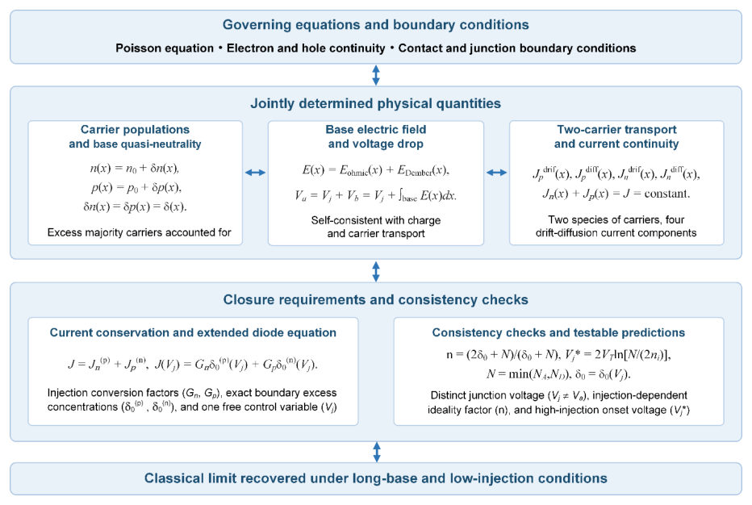
<figcaption class="paper-figure-caption"><b>Fig 1.</b> FIG. 1. Governing equations (top) jointly determine three groups of internal quantities (second row); closure by current conservation yields the extended diode equation, while consistency checks yield three parameter-free relations (third row); the classical theory is recovered as the stated limit (bottom).</figcaption>
</figure>
<figure class="paper-figure-card">
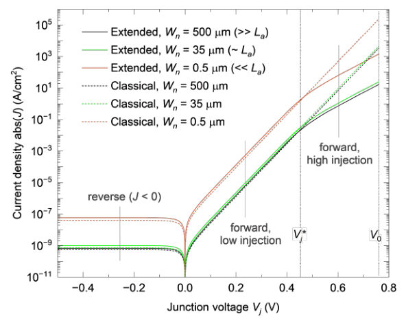
<figcaption class="paper-figure-caption"><b>Fig 2.</b> FIG. 2. Current density versus junction voltage for a Si p+–n junction (𝑁𝑁𝐴𝐴= 5 × 1018 cm-3, 𝑁𝑁𝐷𝐷= 1014 cm-3, 𝜏𝜏= 1 μs, 300 K) predicted by the extended diode equation (solid) and the classical diode equation (dashed), for three n-base widths. Dotted and dashed vertical lines mark the onset 𝑉𝑉𝑗𝑗 ∗≈0.44 V and the built-in potential 𝑉𝑉0 ≈ 0.76 V.</figcaption>
</figure>
<figure class="paper-figure-card">
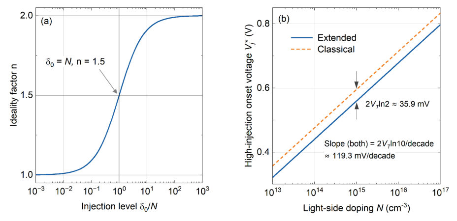
<figcaption class="paper-figure-caption"><b>Fig 3.</b> FIG. 3. Zero-parameter testable predictions. (a) Universal ideality-factor crossover n = (2𝛿𝛿0 + 𝑁𝑁)/(𝛿𝛿0 + 𝑁𝑁) versus injection level 𝛿𝛿0/𝑁𝑁. (b) Onset voltage 𝑉𝑉𝑗𝑗 ∗ versus light-side doping (Si, 300 K), with a slope of 2𝑉𝑉𝑇𝑇ln10 ≈ 119.3 mV/decade for both classical (orange) and extended (blue) predictions.</figcaption>
</figure>
</div>

<p><strong>Summary.</strong> This paper develops an extended, self-consistent theoretical model for the p-n junction diode, moving beyond the limitations of the classical Shockley equation. By incorporating the electric field generated by excess majority carriers, the authors derive a closed-form equation that accurately predicts high-injection current roll-off. This provides a fundamental, parameter-free description of semiconductor device physics.</p>
<p><strong>Why it may be interesting.</strong> The paper's rigorous, first-principles derivation of a transport equation that covers multiple physical regimes (low vs. high injection) showcases advanced non-equilibrium statistical mechanics applied to condensed matter devices.</p>
<details>
<summary>Detailed structure</summary>
<p><strong>Main problem.</strong> The classical Shockley diode equation fails to accurately describe the current-voltage characteristics of p-n junctions under high-injection bias conditions, requiring empirical fixes like series resistance.</p>
<p><strong>Main result.</strong> The authors derive a closed-form, self-consistent extended diode equation that accurately predicts the high-injection current roll-off from first principles, eliminating the need for empirical corrections.</p>
<p><strong>Method.</strong> The work employs a self-consistent two-carrier drift-diffusion framework, incorporating the electric field generated by excess majority carriers, which is neglected in classical models.</p>
<p><strong>Model / system.</strong> The physical system is the semiconductor p-n junction. The model is an extended diode equation derived from first-principles current conservation and carrier transport equations.</p>
<p><strong>Key observables.</strong> The extended diode equation itself, the base electric field (splitting into ohmic and Dember components), and the universal ideality-factor crossover.</p>
<p><strong>Important parameters / regimes.</strong> High-injection bias, doping concentration ($N$), and the built-in potential ($V_0$).</p>
<p><strong>Assumptions / limitations.</strong> The framework assumes a self-consistent treatment of excess majority carriers and derives the equation from first-principles current conservation.</p>
<p><strong>Figures summary.</strong> Figure 2 compares the extended vs. classical J-V curves, showing separation at high bias. Figure 3 presents zero-parameter testable predictions: the universal ideality-factor crossover and the doping scaling of the onset voltage.</p>
<p><strong>Paper structure.</strong> The paper establishes the failure of classical theory, introduces the self-consistent two-carrier framework, derives the extended diode equation via current conservation, and validates the results by showing recovery of the Shockley law and predicting universal crossovers.</p>
</details>
<details>
<summary>Abstract</summary>
<p>For more than 75 years, the p-n junction current-voltage characteristic has been derived by treating majority carriers as an inert background and conflating the junction voltage with the applied bias. Here we show that the base electric field, generated by the coupling of excess majority and minority carriers, fundamentally alters the internal potential distribution. This self-consistent framework yields a closed-form extended diode equation that reproduces the high-injection roll-off without invoking an external series resistance, thereby eliminating an empirical patch that has persisted in the classical theory.</p>
</details>
<p><sub><a href="#top">↑ back to top</a></sub></p>
<h3 id="other-secondary-papers-4">Other secondary papers (4)</h3>
<details>
<summary>Show other secondary papers</summary>

<p><a id="paper-2610.32397"></a></p>
<h3 id="integrable-turbulence-and-statistical-properties-of-chaotic-wave-fields-in-the-complex-modified-korteweg-de-vries-equation"><a href="http://arxiv.org/abs/2610.32397v1">Integrable turbulence and statistical properties of chaotic wave fields in the complex modified Korteweg-de Vries equation</a></h3>
<p><strong>Authors:</strong> Ya-Xin Luo, Xiao-Wang Lan, Wei-Qi Peng<br>
<strong>Type:</strong> theory · <strong>Category:</strong> other · <strong>PDF:</strong> <a href="https://arxiv.org/pdf/2610.32397v1">https://arxiv.org/pdf/2610.32397v1</a><br>
<strong>Analysis basis:</strong> full PDF text, analyzed in chunks</p>
<div class="figure-strip-hint">↔ Scroll figures horizontally</div>
<div class="paper-figures-scroll">
<figure class="paper-figure-card">
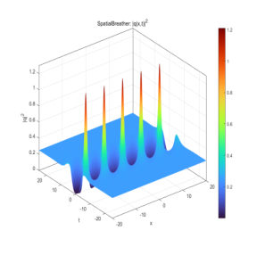
<figcaption class="paper-figure-caption"><b>Fig 1.</b> Figure 1: Three-dimensional spatiotemporal evolution of the wave-field intensity |q|2 for the four analytical solutions of the complex mKdV equation.</figcaption>
</figure>
<figure class="paper-figure-card">

<figcaption class="paper-figure-caption"><b>Fig 2.</b> Figure 2: Intensity profiles of the four analytical solutions (left column, evaluated at three times) and the corresponding eigenvalue spectra of the Lax pair (right column). Black circles denote the theoretical eigenvalues.</figcaption>
</figure>
<figure class="paper-figure-card">

<figcaption class="paper-figure-caption"><b>Fig 3.</b> Figure 3: Spatial distribution of the initial wave-field intensity |q(x, 0)|2 for different parameters.</figcaption>
</figure>
<figure class="paper-figure-card">

<figcaption class="paper-figure-caption"><b>Fig 4.</b> Figure 4: Temporal evolution of the maximum wave-field amplitude |q|max for different parameters.</figcaption>
</figure>
<figure class="paper-figure-card">

<figcaption class="paper-figure-caption"><b>Fig 5.</b> Figure 4(b) shows the evolution of the maximum amplitude for different Lc at a fixed µ = 0.30. The three curves all start from about 1.5 and grow gradually, and after t ≈15 they converge to a similar level of about 2.5–3. The curve for Lc = 1.00 rises fastest in the early stage and has the highest peak, i.e., for larger Lc the wave field converges more rapidly towards the chaotic state and the amplitude fluctuations in the transitional stage are more pronounced. Compared with Fig. 4(a), however, the three curves for different Lc approach each other closely at later times with little difference, whereas the curves for different µ remain separated throughout with pronounced differences in...</figcaption>
</figure>
</div>
<p><strong>Summary.</strong> This paper investigates chaotic wave fields in the complex mKdV equation, focusing on how integrable turbulence transitions between soliton and breather regimes based on initial noise strength. Using advanced numerical and spectral methods, the authors demonstrate that the mKdV's unique nonlinearity leads to steeper wave gradients than NLS, while also establishing that its turbulence is robust against modulational instability.</p>
<p><strong>Why it may be interesting.</strong> While the core physics is nonlinear wave dynamics, the rigorous mathematical framework involving integrable systems, spectral analysis, and the comparison to established models like NLS provides deep insights into nonlinear wave excitation mechanisms relevant to complex physical systems.</p>
<details>
<summary>Detailed structure</summary>
<p><strong>Main problem.</strong> The paper investigates the nature of integrable turbulence and the mechanism responsible for generating rogue waves within the complex modified Korteweg-de Vries (mKdV) equation.</p>
<p><strong>Main result.</strong> Increasing the initial noise standard deviation ($\mu$) drives a transition from breather-dominated to soliton-dominated turbulence, increasing rogue-wave probability. The complex mKdV equation exhibits higher spatial gradients compared to NLS, due to its third-order dispersion and derivative nonlinearity, while remaining modulationally stable.</p>
<p><strong>Method.</strong> The study employs numerical simulations using the split-step Fourier method and analyzes the Lax pair eigenvalue problem via the Fourier collocation method to characterize wave field statistics.</p>
<p><strong>Model / system.</strong> The primary model is the complex modified Korteweg-de Vries (mKdV) equation ($q_t + q_{xxx} + 6|q|^2 q_x = 0$), which is a completely integrable system. The analysis compares its chaotic wave fields to those governed by the standard Nonlinear Schrödinger (NLS) equation.</p>
<p><strong>Key observables.</strong> Soliton/breather counts, wave-action spectrum $S_k(t)$, maximum amplitude ($|q|_{	ext{max}}$), and maximum spatial gradient ($|q_x|_{	ext{max}}$).</p>
<p><strong>Important parameters / regimes.</strong> Standard deviation of noise ($\mu$), correlation length ($L_c$), and the spectral parameters defining soliton/breather types.</p>
<p><strong>Assumptions / limitations.</strong> The analysis relies on the spectral invariance properties derived from the Lax pair formalism, and for statistical characterization, a single random realization is assumed sufficient.</p>
<p><strong>Figures summary.</strong> Figures illustrate the spatiotemporal evolution of various solutions (soliton, breather, rogue wave) and their corresponding eigenvalue spectra. Other figures show how soliton/breather statistics change with $\mu$ and $L_c$, and compare the spatial gradients of mKdV vs. NLS.</p>
<p><strong>Paper structure.</strong> The paper first establishes the mathematical framework by solving the Lax pair and constructing analytical solutions (solitons, breathers, rogue waves). It then simulates the evolution of chaotic fields using random noise, analyzing the transition between turbulence regimes based on noise parameters ($\mu, L_c$). Finally, it compares the energy dynamics and extreme event generation mechanisms against the NLS equation.</p>
</details>
<details>
<summary>Abstract</summary>
<p>This paper investigates integrable turbulence and the mechanism for generating rogue waves in the complex modified Korteweg--de Vries (mKdV) equation through numerical simulations and statistical analysis. We solve the Lax pair eigenvalue problem using the Fourier collocation method and establish a correspondence among solitons, breathers, and rogue waves on the spectral plane. We generate chaotic wave fields by simulating the complex mKdV equation using the split-step Fourier method, starting from a plane wave with superimposed random noise. We analyze the effects of the standard deviation \(μ\) and the correlation length \(L_c\). The results show that increasing \(μ\) drives a transition from breather turbulence to soliton turbulence, increasing the probability of rogue-wave generation.In contrast, \(L_c\) primarily influences the spatial scale of the structures. As the constant background of the complex mKdV equation is modulationally stable, its integrable turbulence does not depend on modulational instability. Compared with the nonlinear Schrödinger (NLS) equation under identical initial conditions, the complex mKdV equation attains comparable amplitudes under strong perturbations, but exhibits a higher spatial gradient. This suggests that third-order dispersion and derivative nonlinearity alter the excitation mechanism and steepen the waveform.</p>
</details>
<p><sub><a href="#top">↑ back to top</a></sub></p>

<p><a id="paper-2610.32449"></a></p>
<h3 id="interplay-of-chemical-disorder-vortex-pinning-and-electron-correlations-in-the-mechanically-robust-medium-entropy-alloy-superconductor-math833math"><a href="http://arxiv.org/abs/2610.32449v1">Interplay of Chemical Disorder, Vortex Pinning, and Electron Correlations in the Mechanically Robust Medium-Entropy Alloy Superconductor $\text{Nb}_{0.45}\text{Ta}_{0.25}\text{Ti}_{0.15}\text{Hf}_{0.15}$</a></h3>
<p><strong>Authors:</strong> Pooja Chourasia, Samiul Sk, Nikita Sharma, B. Vignolle, Abhishek Sarkar, Olivier Toulemonde, Sanjoy Mahatha, S. K. Panda, Sourav Marik<br>
<strong>Type:</strong> both · <strong>Category:</strong> strongly correlated electrons · <strong>PDF:</strong> <a href="https://arxiv.org/pdf/2610.32449v1">https://arxiv.org/pdf/2610.32449v1</a><br>
<strong>Analysis basis:</strong> full PDF text, analyzed in chunks</p>
<div class="figure-strip-hint">↔ Scroll figures horizontally</div>
<div class="paper-figures-scroll">
<figure class="paper-figure-card">

<figcaption class="paper-figure-caption"><b>Fig 1.</b> FIG. 1. (a) The X-ray diffraction pattern of Nb0.45Ta0.25Ti0.15Hf0.15 at room temperature along with Rietveld refinement plot using Fullproof Suite. (b) Schematic representation of the BCC crystal structure, emphasizing the random occupation of lattice sites by the constituent elements in the Nb0.45Ta0.25Ti0.15Hf0.15. (c) FESEM micrograph along with EDS elemental maps for Nb, Ta, Ti, and Hf, illustrating the uniform distribution of the constituent elements throughout the alloy.</figcaption>
</figure>
<figure class="paper-figure-card">

<figcaption class="paper-figure-caption"><b>Fig 2.</b> FIG. 2. Photoemission spectra (PES) of core levels of (a) Nb 3d (b) Ta 4f (c) Ti 2p (d) Hf 4f for HEA Nb0.45Ta0.25Ti0.15Hf0.15and (black line) spectra for elemental metals at room temperature. (e) Valence band spectra obtained using He II at room temper- ature, showing the electronic states in the vicinity of the Fermi level EF .</figcaption>
</figure>
<figure class="paper-figure-card">

<figcaption class="paper-figure-caption"><b>Fig 3.</b> FIG. 3. (a) DC electrical resistivity of Nb0.45Ta0.25Ti0.15Hf0.15 measured between 2 and 300 K in zero magnetic field, along with Bloch-Gruneisen (blue) and Fermi liquid (red) model fits. The fitting was performed to extract the residual resistivity and elucidate the dominant scattering mechanisms. The inset indicates the superconducting onset temperature. (b) Temperature dependent dc magnetic susceptibility measured under zero-field-cooled warming (ZFCW) and field-cooled warming (FCW) conditions in an applied magnetic field (µ0H) of 1 mT.</figcaption>
</figure>
<figure class="paper-figure-card">

<figcaption class="paper-figure-caption"><b>Fig 4.</b> FIG. 4. (a) Temperature dependent lower critical field (µ0Hc1(T)) of the Nb0.45Ta0.25Ti0.15Hf0.15, fitted using eq. 9. The inset shows magnetization curves (M-H) measured over the temperature range 2 K-5.5 K. (b) The field-dependent DC electrical resistivity as a function of temperature. (c) Temperature dependent upper critical field µ0Hc2(T), solid line represents Ginzburg Landau (GL) fit. (d) The measured lower critical field µ0Hc1(T) fitted as a function of temperature using eq. 11. The deduced penetration depth ( λGL(0) ) from the fit (solid blue line) is 158.5 nm.</figcaption>
</figure>
<figure class="paper-figure-card">

<figcaption class="paper-figure-caption"><b>Fig 5.</b> FIG. 5. (a) C/T vs T 2 at zero field, fitted using eq.12 to extract electronic (γn) and phononic (β) and anharmonic contributions ((β2)) contributions. (b) The variation of electronic heat capacity with temperature, modeled using the isotropic s-wave model. The extracted superconducting gap ratio ∆(0) kBTC equals to 2.01.</figcaption>
</figure>
</div>
<p><strong>Summary.</strong> This work presents a comprehensive study of a medium-entropy alloy superconductor, linking its enhanced superconducting performance to its intrinsic chemical disorder. By combining experiments and DFT calculations, the authors demonstrate that disorder stabilizes the superconducting phase, enhances flux pinning, and induces correlated electronic behavior, making these alloys promising for next-generation superconducting applications.</p>
<p><strong>Why it may be interesting.</strong> The explicit modeling of chemical disorder via SQS to explain enhanced superconducting parameters and correlated behavior provides a powerful, generalizable framework for designing novel superconducting materials.</p>
<details>
<summary>Detailed structure</summary>
<p><strong>Main problem.</strong> The study investigates the complex interplay between intrinsic chemical disorder, vortex pinning mechanisms, and electronic correlations in medium-entropy alloy superconductors.</p>
<p><strong>Main result.</strong> The alloy exhibits robust superconductivity ($T_C \approx 7.8$ K) and high critical current density, which is attributed to disorder-induced local lattice distortions that enhance vortex pinning and promote correlated electronic behavior.</p>
<p><strong>Method.</strong> The research combines experimental characterization (XRD, SQUID, specific heat) with advanced first-principles calculations using the Special Quasirandom Structure (SQS) approach within DFT.</p>
<p><strong>Model / system.</strong> The physical system is the medium-entropy alloy $   ext{Nb}<em 0.25>{0.45}  ext{Ta}</em>}  ext{Ti<em 0.15>{0.15}  ext{Hf}</em>$, which forms a body-centered cubic (bcc) structure and is characterized by significant substitutional chemical disorder.</p>
<p><strong>Key observables.</strong> Superconducting transition temperature ($T_C \approx 7.8$ K), high critical current density ($J_c = 0.48 	imes 10^6 	ext{ A/cm}^2$), strong electron-phonon coupling ($\lambda = 1.07$), and a large Kadowaki-Woods ratio.</p>
<p><strong>Important parameters / regimes.</strong> Disorder-induced local lattice distortion ($\Delta d = 0.086$ Å); superconducting upper critical field ($\mu_0H_{c2}(0) = 7.14$ T).</p>
<p><strong>Assumptions / limitations.</strong> The analysis assumes that the observed enhanced superconducting properties are a direct consequence of the interplay between chemical disorder, lattice distortion, and electronic correlations.</p>
<p><strong>Figures summary.</strong> Figures illustrate the structural confirmation (XRD, FESEM), the electronic structure (DOS, band dispersion), and the lattice dynamics (phonon dispersion), all modeled using the SQS supercell.</p>
<p><strong>Paper structure.</strong> The paper proceeds by first characterizing the material's structure and basic properties, then using DFT/SQS to model the electronic structure and lattice dynamics, and finally linking the quantified disorder effects ($\Delta d$) to the macroscopic superconducting and transport properties.</p>
</details>
<details>
<summary>Abstract</summary>
<p>Medium and high-entropy alloys have emerged as a promising class of superconducting materials because their intrinsic chemical disorder can simultaneously enhance mechanical robustness and modify superconducting properties. Here, we present a combined experimental and first-principles investigation of the structural, superconducting, electronic, and local lattice-distortion characteristics of the mechanically robust medium-entropy alloy $\text{Nb}_{0.45}\text{Ta}_{0.25}\text{Ti}_{0.15}\text{Hf}_{0.15}$. The material shows type-II superconductivity with a transition temperature $T_C^{onset} \approx 7.8 ~\mathrm{K}$. A high critical current density of $J_c = 0.48 \times 10^{6}~\mathrm{A/cm^2}$ is observed, and this is attributed to strong vortex pinning at grain boundaries. Specific-heat analysis indicates a strong electron-phonon coupling ($λ$ = 1.07) with a large isotropic s-wave superconducting gap. Density functional theory calculations explicitly model the intrinsic chemical disorder, predict a stable body-centered cubic phase. These calculations further reveal a metallic electronic structure with substantial Ti- and Ta-derived states at the Fermi level. Additionally, our results quantify a pronounced disorder-induced local lattice distortion ($Δd = 0.086$ A), providing a microscopic basis for the experimentally observed enhanced vortex-pinning landscape. Remarkably, the alloy also exhibits an unusually large Kadowaki-Woods ratio, placing it close to the heavy-fermion regime and indicating enhanced electronic correlations beyond conventional alloy superconductors. Our results demonstrate that entropy-engineered chemical disorder can stabilize robust superconductivity, promote strong flux pinning, and induce correlated electronic behavior, establishing refractory medium-entropy alloys as a promising platform for next-generation superconducting materials.</p>
</details>
<p><sub><a href="#top">↑ back to top</a></sub></p>

<p><a id="paper-2610.31805"></a></p>
<h3 id="low-energy-collective-electronic-excitations-in-a-gold-monolayer"><a href="http://arxiv.org/abs/2610.31805v1">Low-energy collective electronic excitations in a gold monolayer</a></h3>
<p><strong>Authors:</strong> Vyacheslav M. Silkin, Maxim Yu. Kagan<br>
<strong>Type:</strong> theory · <strong>Category:</strong> other · <strong>PDF:</strong> <a href="https://arxiv.org/pdf/2610.31805v1">https://arxiv.org/pdf/2610.31805v1</a><br>
<strong>Analysis basis:</strong> full PDF text, analyzed in chunks</p>
<div class="figure-strip-hint">↔ Scroll figures horizontally</div>
<div class="paper-figures-scroll">
<figure class="paper-figure-card">

<figcaption class="paper-figure-caption"><b>Fig 1.</b> FIG. 2: Two-dimensional plot of the energy band dispersion over a whole 2D Brillouin zone in the -1 to 1 eV energy window at the Fermi level which set to zero.</figcaption>
</figure>
<figure class="paper-figure-card">

<figcaption class="paper-figure-caption"><b>Fig 2.</b> FIG. 1: Electronic band structure of a free-standing gold monolayer along the symmetry directions of the 2D Brillouin zone. The Fermi level, EF , is set to zero.</figcaption>
</figure>
<figure class="paper-figure-card">

<figcaption class="paper-figure-caption"><b>Fig 3.</b> FIG. 4: Dielectric and loss functions evaluated at q = 0.048 a.u. along the [10] symmetry direction. The peaks B1 and B2 in the imaginary part of dielectric function ϵ2 are due to the intra-band transitions. The peak B1 is related to the transitions occurring at the sides E1 and E3 of the Fermi surface of Fig. 2 whereas the peak B2 is linked to the side E2. The dashed and solid lines stand for the results evaluated without and with inclusion of the LFE, respectively. The peak in the loss function corresponding to the conventional 2D plasmon2 is located at energies out of the scale of the figure.</figcaption>
</figure>
<figure class="paper-figure-card">

<figcaption class="paper-figure-caption"><b>Fig 4.</b> FIG. 3: Loss function -Im[ϵ−1(q, ω)] at momentum transfers q along the [10] symmetry direction. The dispersion of the conventional two-dimensional plasmon 2DP at small q’s out- side the e-h continuum is highlighted by dashed line. In this momentum region it has infinite lifetime. The peak AP cor- responds to the acoustic plasmon. The inter-band transitions involving the occupied d-type states are possible with ener- gies higher than ∼1 eV when the 2DP peak acquires a finite width. Along this symmetry direction at finite momentum transfers these transitions become rather efficient at energies above ∼1.8 eV.</figcaption>
</figure>
<figure class="paper-figure-card">

<figcaption class="paper-figure-caption"><b>Fig 5.</b> FIG. 5: Density of states versus energy and group velocity of the carriers moving in proximity to the Fermi surface in the [10] symmetry direction.</figcaption>
</figure>
</div>
<p><strong>Summary.</strong> This work uses advanced DFT calculations to study plasmons in a gold monolayer, finding unexpected low-energy collective excitations beyond the standard plasmon mode. These anomalous modes are linked to the hexagonal geometry of the Fermi surface, suggesting the system behaves like a multi-component electron gas despite having a simple single-band electronic structure.</p>
<p><strong>Why it may be interesting.</strong> The discovery of low-energy, sound-like plasmons arising from the geometry of a single energy band is a fascinating example of how band structure topology can induce complex collective behavior, relevant to understanding charge dynamics in 2D materials.</p>
<details>
<summary>Detailed structure</summary>
<p><strong>Main problem.</strong> The study investigates the low-energy collective electronic excitations (plasmons) in a free-standing Au(111) monolayer.</p>
<p><strong>Main result.</strong> The gold monolayer exhibits anomalous, gapless, and anisotropic plasmonic branches at low energies, which are attributed to the hexagonal shape of the Fermi surface allowing for multi-component carrier oscillations.</p>
<p><strong>Method.</strong> Time-dependent density functional theory (TDDFT) within the random phase approximation (RPA) is employed to calculate the dielectric and loss functions.</p>
<p><strong>Model / system.</strong> The physical system is a free-standing Au(111) monolayer. The electronic structure is characterized by a single s-p energy band crossing the Fermi level, but the Fermi surface exhibits a pronounced hexagonal shape.</p>
<p><strong>Key observables.</strong> Plasmon dispersion relations, dielectric function ($\epsilon_M$), and loss functions ($ ext{Im}[\epsilon^{-1}(\mathbf{q}, \omega)]$).</p>
<p><strong>Important parameters / regimes.</strong> Low in-plane momentum transfers ($\mathbf{q}$), Fermi energy ($E_F$), and doping levels (e.g., 0.17 electron doping).</p>
<p><strong>Assumptions / limitations.</strong> The calculations are performed in the RPA, and approximations like using a Gaussian for the $\delta$-function are noted.</p>
<p><strong>Figures summary.</strong> Figures show the electronic band structure, 2D energy band dispersion, and the momentum-energy plots of the plasmonic modes, revealing both the standard 2D plasmon and the novel low-energy branches.</p>
<p><strong>Paper structure.</strong> The paper systematically calculates the response function using TDDFT/RPA, analyzes the resulting dielectric function along high-symmetry directions ([10] and [01]), and compares the findings to Free-Electron Gas theory to establish the origin of the anomalous modes.</p>
</details>
<details>
<summary>Abstract</summary>
<p>The low-energy plasmonic properties of a free-standing Au(111) monolayer, frequently referred to as goldene, are investigated by time-dependent density functional theory in the random phase approximation. In the evaluation of dielectric and loss functions the first-principle band structure characterized by a single $s-p$ energy band at the Fermi level is taken into account. In this system with apparently simple band structure around the Fermi surface the calculations show the presence, besides the standard two-dimensional (2D) plasmon mode, at even lower energies of three anomalous branches in the momentum-energy region usually assigned to incoherent electron-hole pairs. This is an unexpected result since the electronic system of the gold monolayer is characterized by a single energy band crossing the Fermi level. The dispersion of these anomalous plasmonic branches is strongly anisotropic in-plane and gapless. A general feature is that at small in-plane momentum transfers the modes have a sound-like dispersion in certain momentum directions. We rely the appearance of these anomalous modes to a notable deviation of the Fermi surface of a gold monolayer from a circular shape. As a result of its almost perfect hexagon shape, there is possibility to realize in a {\it single} electronic energy band a scenario of a multi-component electron system with the carrier groups moving with different Fermi velocities in certain momentum directions. The found modes correspond to the out-of-phase charge oscillations of the carriers at different sides of the hexagonal Fermi surface. Hence our work presents evidence how in a metal system with apparently simple band structure around the Fermi level its shape can result in conversion of single-particle charge excitations into collective charge excitations.</p>
</details>
<p><sub><a href="#top">↑ back to top</a></sub></p>

<p><a id="paper-2610.32565"></a></p>
<h3 id="magnetic-anisotropy-and-magnetization-dynamics-in-sini-multilayers-probed-by-fmr-and-vsm-magnetometry"><a href="http://arxiv.org/abs/2610.32565v1">Magnetic Anisotropy and Magnetization Dynamics in Si/Ni Multilayers Probed by FMR and VSM Magnetometry</a></h3>
<p><strong>Authors:</strong> Dushyant Singh, Subha Maity, Tharundev V, Subhavenkadesh SS, Vigneshwari SR, Krista R. Khiangte<br>
<strong>Type:</strong> experiment · <strong>Category:</strong> other · <strong>PDF:</strong> <a href="https://arxiv.org/pdf/2610.32565v1">https://arxiv.org/pdf/2610.32565v1</a><br>
<strong>Analysis basis:</strong> full PDF text, analyzed in chunks</p>
<div class="figure-strip-hint">↔ Scroll figures horizontally</div>
<div class="paper-figures-scroll">
<figure class="paper-figure-card">

<figcaption class="paper-figure-caption"><b>Fig 1.</b> Figure 2: The saturation magnetization, Ms, extracted from the M–H hysteresis loops in Fig. 1(a) as a func- tion of the Ni layer thickness, tNi. The horizontal dashed line indicates the bulk saturation magnetiza- tion of Ni at 300 K, approximately 484 emu cm−3. The inset shows the variation of the coercive field, Hc, with tNi for the MLs obtained from Fig. 1(b).</figcaption>
</figure>
<figure class="paper-figure-card">

<figcaption class="paper-figure-caption"><b>Fig 2.</b> Figure 1: (a) In-plane M–H hysteresis loops mea- sured up to an applied magnetic field of 20 kOe for the [Si(40 Å)/Ni(tNi Å)]20 MLs at room temperature. (b) Enlarged views of the low-field regions of the hys- teresis loops presented in panel (a), highlighting the determination of the coercive field, Hc. In panels (b), the original symbols and colour scheme are retained for consistency with panel (a).</figcaption>
</figure>
<figure class="paper-figure-card">

<figcaption class="paper-figure-caption"><b>Fig 3.</b> Figure 6: Polar representation of the angular depen- dence of the ferromagnetic resonance field, Hr, for the [Si(40 Å)/Ni(tNi Å)]20 MLs, measured at room temper- ature (300 K) and a microwave frequency of 9.8 GHz. The resonance field is plotted as a function of the angle θ of the applied magnetic field, measured with respect to the in-plane direction.</figcaption>
</figure>
<figure class="paper-figure-card">

<figcaption class="paper-figure-caption"><b>Fig 4.</b> Figure 7: The plot of the saturation magnetization (Ms, red solid circles) and effective magnetization (Meff, solid triangles) as a function of Ni layer thick- ness (tNi) in [Si(40 Å)/Ni(tNi Å)]20 MLs at ambient temperature, determined using VSM and FMR mea- surements, respectively.</figcaption>
</figure>
<figure class="paper-figure-card">

<figcaption class="paper-figure-caption"><b>Fig 5.</b> Figure 8: The effective anisotropy energy density mul- tiplied by the Ni layer thickness (Keff.tNi), is plotted as a function of tNi for the [Si(40 Å)/Ni(tNi Å)]20 MLs at 300 K. The experimental results are represented by solid symbols, while the solid line denotes the linear fit obtained using Eq. (7).</figcaption>
</figure>
</div>
<p><strong>Summary.</strong> This paper experimentally investigates the magnetic anisotropy and magnetization dynamics in Si/Ni multilayers using VSM and FMR. By analyzing thickness dependence, the authors quantify competing interfacial and volume magnetic anisotropies. The findings are critical for understanding how interface quality and layer thickness can be controlled to tailor these materials for silicon-compatible spintronic applications.</p>
<p><strong>Why it may be interesting.</strong> While primarily condensed matter magnetism, the detailed study of interfacial effects and anisotropy control in thin films is crucial for designing functional spintronic devices, which often interface with quantum components.</p>
<details>
<summary>Detailed structure</summary>
<p><strong>Main problem.</strong> The study investigates the magnetic anisotropy and magnetization dynamics in Si/Ni multilayers as a function of Ni layer thickness.</p>
<p><strong>Main result.</strong> The analysis reveals competing interfacial and volume anisotropies, quantifying an interfacial anisotropy constant ($K_S$) favoring perpendicular magnetization and a volume anisotropy constant ($K_V$) favoring in-plane alignment.</p>
<p><strong>Method.</strong> The research combines static magnetization measurements (SQUID-VSM) with dynamic measurements (angle-dependent Ferromagnetic Resonance, FMR) to probe magnetic behavior.</p>
<p><strong>Model / system.</strong> The physical system is sputtered [Si(40 Å)/Ni($t_{\mathrm{Ni}}$ Å)]$_{20}$ multilayers deposited on Si(111) substrates. The analysis models the magnetic response using dead-layer approximations and spin-wave theory derived from FMR data.</p>
<p><strong>Key observables.</strong> Saturation magnetization ($M_s$), coercivity ($H_c$), interfacial dead-layer thickness ($\delta$), interfacial anisotropy constant ($K_S$), volume anisotropy constant ($K_V$), and spin-wave modes.</p>
<p><strong>Important parameters / regimes.</strong> Ni layer thickness ($t_{\mathrm{Ni}}$), interface quality, and the crossover thickness ($t_c \approx 27 	ext{ Å}$).</p>
<p><strong>Assumptions / limitations.</strong> The analysis assumes that the magnetic properties are governed by the interplay between interfacial effects (dead layers, $K_S$) and bulk volume effects ($K_V$).</p>
<p><strong>Figures summary.</strong> Figures illustrate $M-H$ hysteresis loops for $H_c$ determination, $M_s$ vs. $t_{\mathrm{Ni}}$ trends, and FMR spectra showing angular dependence and different spin-wave modes.</p>
<p><strong>Paper structure.</strong> The paper systematically analyzes static measurements (VSM) to determine $M_s$ and dead-layer thickness, followed by dynamic measurements (FMR) to quantify anisotropy constants ($K_S, K_V$) and identify different spin-wave excitation modes.</p>
</details>
<details>
<summary>Abstract</summary>
<p>The magnetic anisotropy and magnetization dynamics of sputtered [Si(40~Å)/Ni($t_{\mathrm{Ni}}$~Å)]$_{20}$ multilayers were systematically investigated at room temperature using SQUID--VSM magnetometry and angle-dependent ferromagnetic resonance (FMR). Static measurements reveal soft ferromagnetic behaviour in thicker Ni layers and mixed ferromagnetic and superparamagnetic contributions at reduced thicknesses. The saturation magnetization increases toward the bulk Ni value with increasing thickness, consistent with Ni nanocrystallite growth. Magnetic dead-layer analysis yields an interfacial dead-layer thickness of approximately $9$~Å per interface, accounting for the suppressed magnetization in thinner Ni layers. Angle-dependent FMR measurements reveal effective easy-plane magnetic anisotropy, while out-of-plane spectra exhibit additional non-uniform spin-wave modes. The effective magnetization remains lower than the static saturation magnetization, indicating a perpendicular anisotropy contribution that partially compensates the demagnetizing field. Quantitative anisotropy analysis yields an interfacial anisotropy constant of $K_S = +0.17~\mathrm{erg\,cm^{-2}}$, favouring perpendicular magnetization, and a volume anisotropy constant of $K_V = -1.23 \times 10^6~\mathrm{erg\,cm^{-3}}$, favouring in-plane alignment, with an extrapolated anisotropy crossover thickness of $t_c \approx 27$~Å. Increasing FMR line-shape asymmetry with decreasing Ni thickness is consistent with enhanced interfacial roughness. These findings highlight the competing interfacial and volume anisotropies and the importance of Ni thickness and interface quality in tailoring Si/Ni multilayers for silicon-compatible spintronic applications.</p>
</details>
<p><sub><a href="#top">↑ back to top</a></sub></p>
</details>

<hr>
<p>
<a href="index.html">← Index</a>
 · <a href="papers_05.html">← Previous</a>
</p>
<hr>

</body>
</html>
